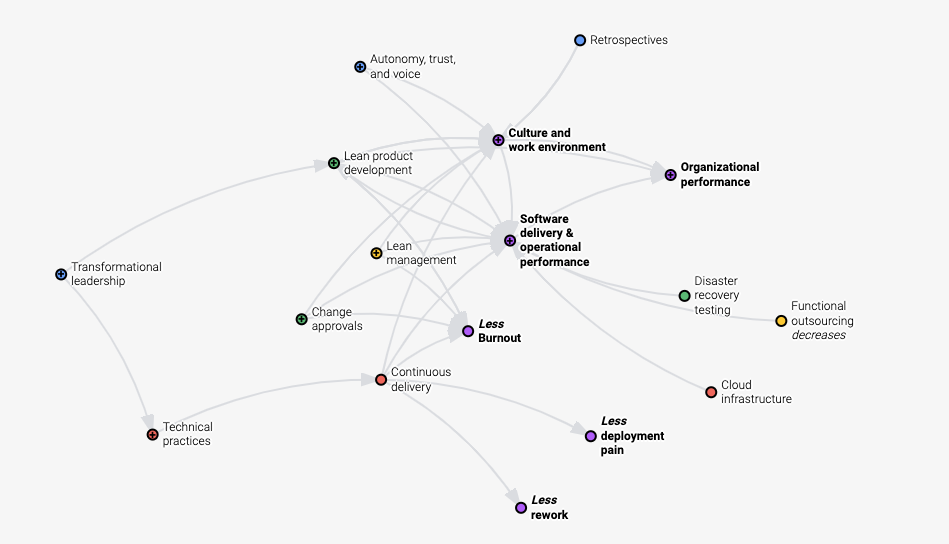

早春的阳光正好，咋暖还寒。
像往常一样，我打开电脑，依靠在椅子舒服的查看起邮件。
首先映入眼帘的，是一封研发效能起头并标粗的邮件。
没错，这是我上周认领的2021年的OKR（Object Key Result），我自己定的目标是让部门所有团队的4KM(DevOps research - Four Key Metrics)指标提升到High。
是的，11月了，已近年底。
想借这个机会，梳理一下这一年来关于研发效能的一些故事。
大家猜猜主角是谁，很容易对吧，当然是研发效能了！
然后并不是！主角是Moby Buildkit项目。
因为研发效能出自DevOps Research(简称DORA)组织，通过收集世界范围内超32000多家企业DevOps数据，产出软件行业组织效能的报告。
该报告对组织效率和软件交付效率之间的关系进行了分析，并综合统计结果，给出了衡量效率的四个指标，也就是上文提到的4KM。
从2014年开始，一直到2021，已经七年。
目前已被Google Cloud收购。
DORA做了一件了不起的事情，那就是给出了衡量软件研发效能的明确指标，并阐述了想要达到高效能，该从哪些方面入手，之前的关联是什么样的。

对于企业最大的影响就是，你现在明确知道你在这个行业里，处于一个什么样的排名了。
这也解释了为什么我们要将DORA排上日程。
那这么重要怎么就没成主角呢？
原因很简单，因为DORA根正苗红，目前已被行业基本认可。
也就意味着当企业准备推行研发效能时，将不会有什么阻力。
反而所有的人都愿意接受她，甚至唯恐被落下了，没有赶上这趟时代列车。
但DORA主要是从企业的视角来阐述研发效能的。
那她对于个人开发 - 我们开发者而言，到底意味着什么呢？
带着这样一个问题，我们借助于一个兴趣小组，对此展开了讨论和学习。
我们从一个假设开始：
假设有一个开发者友好的高效能PaaS平台，可以让我们专注在核心业务问题上，那这个平台应该长什么样？
为了让开发者专注在核心业务上，我们设想她可能长这个样子：
作为开发者，假设我们的核心业务就是用golang输出“hello, world!”，那我们所有要做的事情就只有git push。
如果想要做到这一点，我们想用一个完全自主的试验性项目，结合高效能所推荐的实践，慢慢让这个高效能变得不再那么神秘，看得见，摸得着。
Moby Buildkit项目，相对于Docker大哥项目较新，意味着学习曲线可控。
所提供的知识点，像容器的构建和运行，也正好可以给出目前较新的实践，和工具的用法。
就这样成为了天选之子，从此，主角光环加身。
又是周五的早上，阳光明媚。
袁小白走进四面是大白板，中间一台大电视的会议室，熟练的在会议系统上确认着时间。
他总是习惯提前五分钟来到会议室，提前准备着会议室环境和自己要分享的内容。
今天正好是他毕业后一周年的日子，早已习惯了公司的环境和氛围。
打开电脑，看着自己准备的Buildkit调研笔记，让他有点紧张。
因为这是一周的例会，按习惯，大家会继续上次会议留下的主题 - 调研Moby Buildkit架构，而自己对于如何阅读这种大型开源项目源码也是头一回，一周的时间，也就够自己查看和了解一下如何学习源码，还没有涉及到真正的源码，这让他多少有点紧张。
这时又走进两位同事，一位叫龙飞，团队的中坚力量。
另一位叫贾大智，是这个兴趣小组的发起者。
他们掐着点，不早也不晚，时间刚刚好。
一进来，龙飞就对着袁小白打招呼：小白，还是这么早啊，给大家看看我准备的好东西，说着就已经坐在了离门最近的地方，直接分享自己的屏幕了。
哎，着什么急，今天是小白入职一周年，咱们先恭喜一下他。
贾大智连忙提醒到。
哈哈，你不说我差点忘了。
龙飞不好意思的摸着头，又马上阳光灿烂的祝贺着袁小白。
大家嘻嘻哈哈的进了今天的主题 - Moby Buildkit架构分享。
会议室电视上早就显示着龙飞的成果 - Moby Buildkit 流程图：
看着这一屏都显示不完的超长流程图，袁小白一下楞住了。
要知道大家的起点都一样，都没有golang相关的项目经验，为什么龙飞这么快就能读懂源码，并将流程图给输理出来了，真是不敢想像。
从这周查看的源码阅读方法介绍中了解到，确实有一种方法，叫主线阅读法，就是根据你想了解的流程，快速梳理代码调用流程，以弄清楚大致的代码关系。
就像交朋友一样，先有一个大致的了解，然后再深入细节。
但这种方法难度较大，因为需要阅读者能将之前学过的知识融汇贯通，特别是编程语言相关的知识点。
还有一种，就是问题驱动阅读法，通常是带着明确的目的去阅读源码，比如解决某个ISSUE，然后提PR（Pull Request）。
这种方法能高效的达到自己的目的。
但和我们这次阅读源码的需求有点不一样，我们需要的是了解整体结构，补充我们相关的领域知识，好为下一阶段 - PoC（Prove of Concept）做准备。
袁小白的好奇心一下就补勾了起来，来不急细想，忙问道：龙飞，你是怎么在短短一周的时间里面，就梳理出了主流程时序图的？
龙飞将主流程，时序图分享在电视上后，就迫不及待的讲了起来。
根据我们的Happy Path(是理想的工作流)，我们需要先关注镜像构建流程，也就是灰色的模块我们可以先不考虑。
这就是我重点在过去一周里学习的主线。
我直接找到GitHub上的p源码，就一头扎了进去。
哎，还别说，README第一张图，就是我需要去关注的主线：
通过第一行可以看出，用法很简单，将./example生成的内容，通过管道传给 buildctl build命令，就可以从远端获取镜像，并开始构建镜像了。
顺着这个思路，我就先找到了buildctl命令行。
说着就打开了命令行终端，向我们展示了代码的位置：
然后我就顺藤摸瓜，一步步的画起了时序图，当然还是先从命令行开始：
自然就是命令行本尊了，用的是一个第三方库，我还没来得急查看细节，不过看着用起来挺方便的
就是我们的构建命令行了，也就是上面所指的buildkit build，将入口函数注册到了命令行框架里，触发命令的时候就会被调用，这里主要做了几件事情：
./exampleshell脚本输出的内容提供多种client，如HTTP、GRPC，我们这里用的是GRPC。
然后由client发起连接请求。
这个文件主要做的事情就是发起真正的连接。
先初始化共享会话，在会话运行过程中，还进行了grpc hijack劫持，可能是要将无状态连接变成长连接，可能是出于交互的考虑吧，比如在容器运行的过程中产生的标准输出，需要回传给client，以供展示，这只是我的猜测，还没有验证。
最后调用buildkitd首护进程提供的控制器进行解析 - controller.Solve
一口气说完后，停顿了会，看了看袁小白和贾大智，问道：目前为止，有什么问题吗？
看着两人好像没什么反应。
就接着说道，那我准备讲下一部分 - buildkitd守护进程了。
用来记录一些出现的知识点，以后会把这些知识点展开来介绍。
书接前文。
说龙飞一口气介绍完了Buildctl build命令行的前半部分 - client的工作流程，看了眼没有反应的袁小白和贾大智。已经近不急待的准备讲解下一部分了 - Buildkitd。
袁小白可能真的没有什么想说的，毕竟听起来好像没什么特殊的，就是一些新鲜词不停的蹦了出来，不过早就习惯了。
贾大智到是一副若有所思的样子，但看样子，好像也示意着继续往下讲。
龙飞滚动了时序图，到了中间的部分。
停顿了一下，说道：这里可是花了我一点时间，因为在buildkitd启动后，初始化了好些大家伙。
这一下确实引起了另两个人的注意。
看到袁小白若有所思，龙飞问道：小白是有什么问题吗？
到不是什么大问题，就想问下为什么后面加个字母d，有什么含义吗？
哦，这个啊，d是Daemon的首字母，在计算机领域中，翻译过来是守护进程的意思，指的是在后台进行的进程，用来接收请求用的。
像Linux的initd，还有CNCF（Cloud Native Computing Foundation）的containerd，都是按这个风格来命名的。龙飞笑着回答道。
那好我们来看Buildkitd启动后，接收请求的部分先：
就是刚说的守护进程，会在后台以进程的形式运行，接收发过来的请求。
启动的时候用的是sudo，也就是这个进程需要管理员权限。
创建了一个control实例，后面可以看到，接收和处理请求基本上都是这个控制器。
而且这里用的也是MVC模式。
为什么说控制器做了主要的工作呢。
因为守护进程启动后，正式解析一个请求时，控制器会做以下几项工作：
worker，并且默认的是runc(容器运行时命令行工具)，并且会帮助指定ExporterExporter进行解析，并进行配置solver，而这个求解器应该是我们重点需要关注的了看起来很简单，对不对，但当我继续往后梳理的时候，我不得不一次次的又重新回到这里。
因为golang里定义了接口后，会有很多不同的实现者，而我们的编缉器只能帮助我们索引到接口级别，并不能智能索引到实现者，这时我就需要在初始化的源头，特别关注一下这些默认的设置，费了我不少时间。
如果你们发现有什么好的编缉器插件，记得分享给我一下。
这种情况到是不奇怪，面向接口编程时，编缉器是有些用不上力。
贾大智顺嘴说到。
用来记录一些出现的知识点，以后会把这些知识点展开来介绍。
那为什么说这里是核心呢？
龙飞顿了顿，像是在整理思路。
是因为真正完成构建镜像的操作和对象都在这里面了
像我们之前提到的，在buildkitd启动后，control接收到请求后，会初始化很多实例，其中solver就是在这个时候构建成功的，这里有一个关键点就是这步操作还实例化了jobs
jobs是由一个个的edge构建任务组成的，从复数来看，应该会有多个。
可能是以edge为单位，将DAG-有向无环图，里所有的边都作为一个任务来处理，这样就方便管理了，但带来的挑战就是如何高效组织和执行这些任务呢。
还没等龙飞接着往下说，袁小白就已经忍不住问道：不好意思，什么是DAG，图上也没看到啊。
哦，这个啊，我看到这里面出现了Vertex， Edge，这通常都是在图数据结构的上下文里，而通常如果要解析某一特定语言(DSL - Domain Specific Language)时，都会用到DAG(Directed Acyclic Graph)，就像咱们大学里学的编泽原理里讲到的。
哦。
虽然一下子想不起来了，但好像是有提到。
袁小白回应到。
刚才还说到编排任务呢。
这个scheduler就是干这个的，她会在jobs初始化的时候，就开始执行循环s.loop了，这样在edge相关的构建任务时，就可以dispatch分发出去了，由对应的edge实例去完成剩下的事情了。
那任务是由谁拆解的呢？
没错，正是bridge，当接收到解析请求llbBridge.Solve的时候，bridge会新建一个结果代newResultProxy理实例，这样就可以由这个代理去完成剩下的构建任务拆分了。
在loadResult的时候，加载vertex edge，这里是另一个关键点。
还记得前面client读取的是llb.definition，而这里取代的已经是vertex了，也就是说已经完成了转换。
再正式开始构建，传入的参数是edge，通过将任务加入到jobs中，由scheduler编排，最终由edge通过缓存策略shareOp.CacheMap来进行op的构建。
这里有点绕，我还是没听懂。
袁小白挠着头说道。
确实是的，如果想要了解的更详细，光看流程还是不够的，还得配合上数据结构，最好还有一些小例子。
现阶段先了解个大概，知道有这么回事就行了。
龙飞说。
是的，我们先了解个全貌，然后再进行拆分，一个模块一个模块的详细了解。
贾大智也说道。
用来记录一些出现的知识点，以后会把这些知识点展开来介绍。
说完代码阅读思路后，龙飞将时序图向右边滑了滑。
剩下的流程就是OP - Operation如何构建的过程，这里的OP，指的是由Dockerfile解析过后，需要执行的操作。
比如：FRAOM UBUNTU:14.04，这个会被理解为Source OP；而RUN ls则为被解析成Exec OP。
不过具体怎么实现的数据转换，我还没来得急花时间整理。
先说source ops
可以理解为解析到了关键字FROM，可以想像的是，为了高效完成伤。
我们需要缓存，如果缓存命中，那就可以直接使用，如果没有，就需要从远端去取。
这里的对应的是source manager和Puller。
前者就是资源管理器，里面会用cacheKey对资源进行索引，如果没有缓存，就需要通过pull，去取镜像的Manifest制品清单信息，那这个又要说到Image Bundle了，后面我们可以参考OCI相应的说明。
因为制品清单里很多信息，并且都是可以并行执行的，所以buildkit直接用的是containerd的拉取器，并没有所有的轮子都自己造。
这些执行完后solver会调用exporter，通过cm.Differ缓存管理器的differ，取差集，最终生成变更后的layer。
最后会调用client.Response，返回请求结果。
这差不多就是完整的流程了。
简单来回顾一下：
buildctl命令行，运行build命令，并传入解析好的Dockerfile，这里并不是Dockerfile的字符流，而是解析过后的llb.Definitionclient会用solver向buildkitd守护进程发送grpc网络请求control是真正的服务组织者，会提前初始化好所需要对象，像worker，exporter，等等solver是真正的重点所在，需要高效运行构建任务，那需要考虑如何编排任务，设置好缓存策略scheduler的协调下，最后面向一个个的operation，进行具体的任务执行，其中source op是而向资源的，目的就是准备好资源；而exec op，则是负责具体执行任务的blob chain块链索引后，进行持久化response响应一口气说完后，龙飞吸了口气，好像刚才耗费了大量的体力。
然后习惯性的问了句：大家还有什么问题吗？
袁小白，脑子还在抓紧运行中，没来得急想还有什么问题。
到是贾大智的声音响了起来。
讲的不错，我有两个问题：
OP到哪一步执行完的？比如source op，这里只看到了puller下载所需的bundle资源文件，但没看到下载完后干了什么？buildkit这个新工具的业务价值是什么？为什么要重新写一个呢？第一个问题到是和技术相关，龙飞想了想，确实这一部分在时序图里没有呈现出来，不过接下来可以花时间了解下。
这第二个问题到是没想过，不过应该是什么大问题。
龙飞把自己对于这两个问题的想法说了出来，大家也都觉得这两块可以花时间再研究一下。
袁小白到是不觉得这两个是什么大问题，已经很厉害了吧！
我也找到些关于架构的资料。
当袁步白就贾大智的不尽人情嘟囔时，贾大智的声音响了起来。
用来记录一些出现的知识点，以后会把这些知识点展开来介绍。
听着贾大智的问题：
buildkit这个新工具的业务价值是什么？为什么要重新写一个呢？
袁小白的内心还是有一点拒绝的。
心想，啥也没干，整天就会提问题，还都是这些看起来和技术没啥关系的问题。
有本事上代码啊。
心里正嘀咕着。
耳朵里响起了贾大智的声音：我这一周也看了些资料，我从我的视角来说一下我对架构的理解。
我和龙飞一样，我也去看了下源码库，发现提交次数最多的是这位作者 - Tõnis Tiigi，名字不会念，就用谷歌翻译识别了下，原来是爱沙尼亚语，大致发间是"托尼斯 提gi"，为了方便，我们就叫他T神吧。
龙飞和袁小白都一齐点着脑袋，表示赞同。
贾大智接着说道。
然后我就去搜了下关键字Moby buildkit architecture design。
就发现了这篇文章，准确的说是这个issue - moby issue 32925。
原来这个就是最早提出问题和介绍架构理念的issue，与其说issue，我更愿意称之为架构提议草案。
细节大家可以会后去看，我先说一下我的理解。
下一代 docker build命令行工具。
因为现在的工具，只能一个文件一个文件的构件，还都是Dockerfile，很多项目不只一个构建文件，有的有多个构建文件，并且相互之间有依赖，这些需求，目前的工具都满足不了。
还有一点，就是慢，因为都是顺序执行，如果是大型项目，比如微服务，耗费的时间没法忍耐。
而新一代的工具，正是要解决这些问题。
用并行构建的方式，让用户可以自由定义前端描述语言，解析为统一标准操作集，来构建这些复杂需求的构建项目，并且可以满足多项目同时构建。
其中一个主要的目标，就是将构建的前端和后端进行分离。
前端指的是，用户对于构建步骤的定义。
后端指的是，用最高效的方式，来构建通用操作集(low-level description of the build operations)。
不是一个随意的任务执行者。
而是一个长运行服务，用来解决将源码构建为人工制品的问题，并且以一种独立、便携、可重复和最高效的方式。
总共有八个模块。
资源模块，用来从远端获取数据。
如From ubuntu:14.04，获取基础镜像。
获取用用户定义好的构建信息，就像龙飞说的./example | buildctl build命令。
用于转换成统一的后端标准构建操作集。
这里要强调的是Dockerfile是所支持前端的一种形式，那就意味着，大家可以自定义自己的前端语言，自己的Container building DSL。
袁小白张大了嘴，想想还有点小激动呢。
找到最高效的构建策略，构建构建图谱，这里说的正是龙飞前面指的DAG（有向无环图），通过图所承载的所有信息，包括Operation和各操作之前的依赖关系，这样就为后面找到高效的方法提供了数据支持。
最后还可以将所有的操作结果，进行缓存，为后续的构建任务提供缓存服务。
那这个就厉害了，想想看，以后全世界的人都不用再重复构建，浪费算力了，这真是绿色环保的壮举啊！
实现这个底层逻辑，我猜是cotent addressable，指的就是对一个文件进行HASH求值，生成唯一标识，如果由这份文件拷贝出来的新文件，用同样的HASH算法，就可以得到同样的KEY，就不用自己再构建一遍了，嗯，理论是可行的。
运行容器的真正组件。
如用OCI runc运行容器。
将构建结果，根据导出配置，进行导出，如导出tar包，或者是zip包。
为构建操作提供文件系统服务，如在根文件系统rootfs。
这个涉及到LXC(linux container)技术。
将最近的构建产出，中间结果，都可以进行缓存，为再次构建，提供高效保障。
这里不仅仅缓存关系型数据，还可以缓存blob块数据。
用来将多个构建任务关联起来。
前面的多少还可以和龙飞说的对应上，这个好像没找到对应的流程，可能不在主时序图里吧。
这就是我对这个项目的起源，和需要解决的问题 - 为用户提供的价值，以及最早设计的思路的理解。
看了看时间，贾大智还没等大家提问。
说道：咱们接下来的方向就顺着主时序图和这些模块结合起来看吧，那下一次例会，咱们的主题就选frontends了。
时间过得真快，但今天对于袁小白来说，真的是思路大开，原来，学习源码这么有挑战，但同时，也还挺有意思的。
加上两位好队友，感觉这事好像能成。
已经开始期待下一次的例会了。
想着上一次有关架构讨论的会议，袁小白因为自己没有帮上忙而闷闷不乐。
一心觉得龙飞也太厉害了，我什么时候能像龙飞一样就好了。
贾大智看起来好像只是会提问题，可看问题的角度，确实也值得学习。
这一次要看模块的源码了，可得上点心，争取多贡献自己的一份力量。
周六因为和朋友一起踏青，所以没能抽出时间看源码。
周日可要好好看看了。
心里想着，就起了个大早，泡上一杯自己喜欢的绿茶，津津有味的看了起来。
首先要将源码更新到最新：
最早看的时候是三月份，目前从最新的和大家一起来梳理
frontends这个控件在龙飞讲的时序图里好像没看到，但根据贾大智的描述。
会出现在client。
获取用用户定义好的构建信息，就像龙飞说的./example | buildctl build命令。
用于转换成统一的后端标准构建操作集。
这里要强调的是Dockerfile是所支持前端的一种形式，那就意味着，大家可以自定义自己的前端语言，自己的Container building DSL。
那我们先顺藤摸瓜，从命令行buildctl build开始吧。
找到对应的buildctl的文件夹，并打开文件main.go，可以查看到以下代码结构：
看起来不算复杂，golang会在运行main函数前，执行init函数，且通过import可以看出，命令行工具用的是urfave/cli，版本v2有详细的使用说明。
package main
import (
"os"
"github.com/urfave/cli/v2"
)
func main() {
(&cli.App{}).Run(os.Args)
}将系统参数传入cli.App实例，就可以运行了。
顺着这个思路再来看buildctl源码，在main函数中，有以下代码：
func main() {
...
app := cli.NewApp()
app.Name = "buildctl"
app.Usage = "build utility"
app.Version = version.Version
defaultAddress := os.Getenv("BUILDKIT_HOST")
if defaultAddress == "" {
defaultAddress = appdefaults.Address
}
app.Flags = []cli.Flag{
...
cli.IntFlag{
Name: "timeout",
Usage: "timeout backend connection after value seconds",
Value: 5,
},
}
app.Commands = []cli.Command{
diskUsageCommand,
pruneCommand,
buildCommand,
debugCommand,
dialStdioCommand,
}
...
handleErr(debugEnabled, app.Run(os.Args))可以看出，和官方推荐的使用方法类似。
buildctlflag，也就是命令行参数，app.Commands里注册对应的子命令，其中我们就发现了buildCommand，这里也就是我们要去一探究竟的地方了app.Run(os.Args)看来看源码也不怎么难吗，看到有个好的开头，袁小白品了口绿茶，味道刚刚好。
袁小白感觉自己状态不错，准备一鼓作气，走通frontends流程。
还没等编缉器自动装好依赖，就迫不及待的出发了。
直接定位到build子命令，就发现这个子命令的入口函数就是buildAction:
func buildAction(clicontext *cli.Context) error {
c, err := bccommon.ResolveClient(clicontext)
if err != nil {
return err
}
...
eg, ctx := errgroup.WithContext(bccommon.CommandContext(clicontext))
solveOpt := client.SolveOpt{
Exports: exports,
// LocalDirs is set later
Frontend: clicontext.String("frontend"),
// FrontendAttrs is set later
CacheExports: cacheExports,
CacheImports: cacheImports,
Session: attachable,
AllowedEntitlements: allowed,
}
...
var def *llb.Definition
if clicontext.String("frontend") == "" {
if fi, _ := os.Stdin.Stat(); (fi.Mode() & os.ModeCharDevice) != 0 {
return errors.Errorf("please specify --frontend or pipe LLB definition to stdin")
}
def, err = read(os.Stdin, clicontext)
if err != nil {
return err
}
if len(def.Def) == 0 {
return errors.Errorf("empty definition sent to build. Specify --frontend instead?")
}
} else {
if clicontext.Bool("no-cache") {
solveOpt.FrontendAttrs["no-cache"] = ""
}
}
...
eg.Go(func() error {
...
resp, err := c.Solve(ctx, def, solveOpt, progresswriter.ResetTime(mw.WithPrefix("", false)).Status())
...
return nil
})
...
return eg.Wait()
}这里的主要流程是：
bccommon.ResolveClient(clicontext)./example | buildctl build，这时就从os.Stdin标准输入中读取数据，这里对应的是def, err = read(os.Stdin, clicontext)。如果有设置，就像在命令行使用说明里的$ buildctl build --frontend dockerfile.v0 --opt target=foo --opt build-arg:foo=bar --local context=. --local dockerfile=. --output type=image,name=docker.io/username/image,push=true，则看看是否有缓存相关的配置c.Solve统一处理嗯，目前为止还算清晰。
开始进入到了client package下的solve.go。
可以看出第一个出现的solve，主要是判断，在参数中关于Frontend的配置情况，如果没有设计，那def就不能为空，也就是要从os.Stdin中读取；如果Frontend不为，像dockerfile.v0，那def就得为空，因为这时候不接受标准输入了，会从--local dockerfile=.中读取构建信息。
可以注意到，下一步就是进入到了小写的solve这个函数，在golang里，是区分大小写的，也就是说这是两个函数。
并且golang认为大写开头的就相当于public函数，而小写开头的就是private函数，适应后感觉也挺方便。
算上前面两个solve，这时第三个solve又出现了 - c.controlClient().Solve(...)。
当我们直接跳转到第三个Solve时，来到了接口定义处：
当全局搜索时，发现有很多solve，这可怎么办？
突然想起这是由c.controlClient()所返回对象的方法，那就先看看究竟返回了个啥：
原来到了这里，那就是说这个结构体实现了solve方法，果不其然：
再一次出现了solve，这一次还是个远程调用c.cc.Invoke(ctx, "/moby.buildkit.v1.Control/Solve", ...)
这下好了，上哪儿找c.cc去，frontend还不见了。
看着凉了的茶水，肚子也咕咕叫了几下。
那就明天去问问龙飞吧，看看有什么建议。
本来想着周一就找龙飞好好咨询一下，可好巧不巧，这两天龙飞都很忙。
因为有一个新的项目启动了，正在准备项目的iteration 0（迭代零）。
好容易等到周三，龙习终于有时间了，迫不急待的问道：
我顺着buildctl build命令，看到了control.pb.go文件里的c.cc.Invoke，后面编辑器就没法帮我定位到下面的函数了，不知道从哪儿查起了。
龙飞听完，想了想，很快说到，应该是前端的请求最后一步了，发出GRPC请求。
接下来就是buildkitd接收到请求，开始处理了。
说着打开源码，快速找到buildkit/cmd/buildkitd/main.go的main函数的GRPC服务相关的代码：
就像代码里提到的，先创建一个controller，然后将controller注册到服务，最后启动服务，当然这里是GRPC服务。这样就可以接收并处理前端的请求。
从前面得知，请求的链接是moby.buildkit.v1.Control/Solve，那我们可以猜测一下这个服务地址是需要提前注册的，对吧。
那我们看看controller.Register(...)这个操作。
随着一步步跳转，果然"Solve"这个方法出现在眼前：
并且显示的处理方法是_Control_Solve_Handler：
这里代码显示的是会找到server，并调用Solve方法。
然后我们再回过头来看看newController所创建的对象，因这这个对象被注册到了server里，那我们现在去确认一下，这个对象是否有Solve方法，如果要保险，可以再确认一下其它的方法，像DiskUsage, ListWorkers。
经过简单的查找，果然：
controller的方法里，确实包含了我们想要的对象，终于连接上了，看来可以从这里再继续探索了。
袁小白一边感谢着龙飞，一边不禁心生敬意。
真是山穷水尽疑无路，柳暗花明又一春。
看源码的体验就是这样，碰到问题，解决问题，再碰到问题，再解决问题，如此反复。
这也是大家不喜欢看别人源码的原因，很多时候，比起看别人的代码，更想自己从头写一份。
袁小白下一次又会卡在哪儿呢？
不用担心，很快就会看到的。
有了龙飞的指导后，总算是将断了的线索又重新给接了起来。
袁小白的理解是，前面就像是客户端，准备参数，向服务器发送请求，服务器接收到请求后，进行处理。
而且服务器提供的是GRPC类型的服务，应用的是HTTP协议。
基于这样的理解，袁小白搓着手，信心满满的打开了下一个Solve方法：
可以看到，在control里面，调用solver，并进行Solver。
这里的参数什得我们关注，如有传入Frontend相关信息，不过req.Frontend是字符型，也就是说这里传的只是Frontend的类别，比如咱们这里就是dockerfile。
下面的Definition也值得我们关注，还记得前面有提到，如果是./example | buildctl build，那么这里的Definition就是从标准输入读取的，目前我们用的是读取dockerfile的方法，也就是说这一项是为空的。
接下来再看c.solver.Solve(...):
终于我们看到了frontend.Result，也就是说这里会用到Frontend，解析dockerfile后，产出结果。
在这里分了两种情况：
自然而然，袁小白，又打开了bridge，查找起了又一个Solve:
果不其然，这里我们终于找到了frontend使用的地方，通过b.frontends map用req.Frontend取得frontend实例，然后用f.Solve真正的开开始解析。
那这些实例又是在哪儿初始化的呢？
这时，袁小白想起来龙飞说的话 - 初始化都是在创建controller实例了时候进行的。
想到这，就打开了buildkitd，的主函数，并查找实例化controller的地方：
果然如龙飞所说，就是在newController的时候，也初始化好了frontends，并且这里就有dockerfile的类型，而且保存的是一个GatewayForwarder实例，但可以看出，真正处理的还是dockerfile.Build方法，终于找到了这里，袁小白不禁兴奋的咽了口口水。
可好景不长，这个Build函数的将近500行，扫了一眼代码，挫败感又卷土重来:
没办法，只好硬着头皮上了。
前面的一些常规配置读取到还无关紧要，但后面的一串操作让袁小白不知所措。
比如llb系列：
再比如这个长长的Dockerfile2LLB方法：
最奇怪的是，这里面又来了一次c.Resolve:
咱们不是刚从client.Solve过来的吗？
问题一个接一个，实在是泥牛入海，使不上劲的感觉。
龙飞似乎预感到了袁小白会再次发现新的疑惑点，因为龙飞自己通过上一次和袁小白一起梳理后，也感觉到有一些细节在第一次的梳理时，是有漏掉的，带着这些新的线节，龙飞将Frontends flow又重新整理了一遍：
袁小白一看见这张图，好像脑子里正在到处游走的信息，一下子都找到了自己的位置，独立确有了明显的规律。
看到袁小白的目光被Frontend flow给吸引住，龙飞开始说道。
这个解析流程确实有点绕，单单一个solve，就出现了8次，这就会让我们产生一些疑问：这些solve都是一个意思吗，在不同的对象里，如buildctl, client, control, solver等等，这些solve在这些对象里难道都是拥有同样的意义？
不过不要急，让我们按这个流程再走一遍，看看作者到底想表达什么？
buildctl build --frontend dockerfile.v0 --local dockerfile ...，这里是整个流程的触发点，这里我们要开始解析用户的构建需求，而这些需求都按dockerfile的格式表达了出来client，用来处理网络请求这里也正是袁小白不明白的地方，为什么在dockerfile.build里，又会出现c.solve，终于在这里找到了答案。
但是，如果想要更清楚的理解这里面的逻辑关系，我们需要梳理出数据的形式转换过程：
dockerfile -> Definition -> Edge
那么接下来，我们可以去了解一下dockerfile的解析，及LLB中的数据格式转换。
看来，我们只是刚刚开始，路还很漫长，袁小白深深的吸了口气。
转眼一周就过去了，周五的例会上袁小白分享了这一周的曲折经历，和对代码结构的理解。
龙飞也进行了补充。
贾大智看到大家的热情，对两人赞不绝口。
但没有太多关于代码的更新，这让袁小白心生不满。
心想，我和龙飞都花了这么多时间在代码上，大家都有不错的进展，而你代码相关的，一点更新都没有，这不公平啊。
周未袁小白闲着无聊，脑海里又浮现了龙飞提出来的问题：
数据结构之间的关系到底是什么样的？
带着这个问题，袁小白想到，目前看到了dockerfile.build，在这里面出现了三个地方是和数据相关的。
一个是将dockerfile转换成src，虽然还没有看这里的实现细节，看起来好像是将dockerfile转换成了llb语言：
还有一个就是dockerfiel2llb.Dockerfile2LLB:
这里不禁让袁小白有点困惑，前面不是已经转了吗，为什么这个地方还又再转一次？难道两次不一样？
最后这个地方也来源自dockerfile2llb.Dockerfile2LLB，因为这里有一个依赖条件，那就是参数中的dtDockerfile这个[]byte类型，将硬盘上的dockerfile加载到了内存空间，那这个又是在哪里准备的呢？
虽然找到了这些信息是如何读取的，解决了一个问题。
但是又出现了三个问题：
为什么这里又要c.Solve一下？
为什么要取出res.SingleRef？
ref又是什么？
虽然现在问题不少，但最让袁小白想了解的，还是这个神秘的LLB，因为所有的问题似乎都与这个LLB有某种联系，LLB究竟是干什么的呢？
目前对LLB的了解，似乎接近于零，因为哪怕是从贾大智对大致架构的解读，都没有提到这一块。
这真是让人难以相信，这么重要的模块居然没有说明！
袁小白很快便找到了llb位置所在，位于client包下：
看着这么多的新文件，这让袁小白感觉又进入了另一个元宇宙...
不过让人开心的是，这里有很多以_test结尾的文件，习惯了TDD（Test Driven Development - 测试驱动开发）后，感觉测试就是另一种类型的文档，不仅能说明很多信息，还可以用来执行，解答疑惑。
但袁小白很快发现，这些都是一些局部的测试，并没有让自己有一个全局的理解，LLB到底是干什么的？
通过全局查找，袁小白似乎看到了希望：
在buildkit0这个例子中，正好讲的就是LLB的使用方法，看起来好像是将dockerfile中一行行的指令用另一种形式组织起来，并且可以同时梳理出多个dockerfile之间的关联！
找到这个用例examples/buildkit0/buildkit.go之后，袁小白精神为之一振，试了运行了一下测试，可以跑通：
虽然从结果来看，好像没有太多信息，但这说明可以借助一些日志信息帮助理解，信心也就变得更足了。
func main() {
var opt buildOpt
flag.BoolVar(&opt.withContainerd, "with-containerd", true, "enable containerd worker")
flag.StringVar(&opt.containerd, "containerd", "v1.2.9", "containerd version")
flag.StringVar(&opt.runc, "runc", "v1.0.0-rc8", "runc version")
flag.Parse()
bk := buildkit(opt)
out := bk.Run(llb.Shlex("ls -l /bin")) // debug output
dt, err := out.Marshal(context.TODO(), llb.LinuxAmd64)
if err != nil {
panic(err)
}
llb.WriteTo(dt, os.Stdout)
}containerd以及containerd和runc的版本信息。据袁小白所知，containerd是CNCF提供的容器运行管理工具，而runc则是容器运行时工具。ls -l /bin，列出所有在/bin目录下的文件buildkit方法，依赖于goBuildBase，用来创建src，也就是源镜像
func goBuildBase() llb.State {
goAlpine := llb.Image("docker.io/library/golang:1.17-alpine")
return goAlpine.
AddEnv("PATH", "/usr/local/go/bin:"+system.DefaultPathEnvUnix).
AddEnv("GOPATH", "/go").
Run(llb.Shlex("apk add --no-cache g++ linux-headers")).
Run(llb.Shlex("apk add --no-cache git libseccomp-dev make")).Root()
}buildkit里，相对复杂的操作就是copy操作：
func copy(src llb.State, srcPath string, dest llb.State, destPath string) llb.State {
cpImage := llb.Image("docker.io/library/alpine:latest")
cp := cpImage.Run(llb.Shlexf("cp -a /src%s /dest%s", srcPath, destPath))
cp.AddMount("/src", src)
return cp.AddMount("/dest", dest)
}在看buildkit前，最后来看看其中的一个操作runc:
func runc(version string) llb.State {
return goBuildBase().
Run(llb.Shlex("git clone https://github.com/opencontainers/runc.git /go/src/github.com/opencontainers/runc")).
Dir("/go/src/github.com/opencontainers/runc").
Run(llb.Shlexf("git checkout -q %s", version)).
Run(llb.Shlex("go build -o /usr/bin/runc ./")).Root()
}和上面的类似，基于golang基础镜像，下载runc源码，进入源码目录，切换到指定版本，最后构建runc可运行二进制文件，并输出到./当前目录下，返回root目录llb.State
func buildkit(opt buildOpt) llb.State {
src := goBuildBase().
Run(llb.Shlex("git clone https://github.com/moby/buildkit.git /go/src/github.com/moby/buildkit")).
Dir("/go/src/github.com/moby/buildkit")
buildkitdOCIWorkerOnly := src.
Run(llb.Shlex("go build -o /bin/buildkitd.oci_only -tags no_containerd_worker ./cmd/buildkitd"))
buildkitd := src.
Run(llb.Shlex("go build -o /bin/buildkitd ./cmd/buildkitd"))
buildctl := src.
Run(llb.Shlex("go build -o /bin/buildctl ./cmd/buildctl"))
r := llb.Image("docker.io/library/alpine:latest")
r = copy(buildctl.Root(), "/bin/buildctl", r, "/bin/")
r = copy(runc(opt.runc), "/usr/bin/runc", r, "/bin/")
if opt.withContainerd {
...
} else {
r = copy(buildkitdOCIWorkerOnly.Root(), "/bin/buildkitd.oci_only", r, "/bin/")
}
return r
}git clonebuildkit源码，并进入到源码目录那最后当我们进行ls -l /bin脚本时，显示的结果里就有buildctl, runc, buildkitd.oci_only这三个文件了。
可是从最上面的输出来看，好像并不是运行完后的结果，更像是中间过程，也就是Definition。
整体来看，我可以用一个镜像来构建buildkit全家桶 - buildctl, buildkitd, buildkitd.oci_only。
然后用一个镜像来准备runc命令行工具。
并用一个全新的镜像来执行copy操作。
最后用一个干净的镜像来持有所有创建好的工具。
这下袁小白的好奇心算是彻底地被勾了起来：
袁小白越想越兴奋 - LLB用起来还挺简单的，一看就明白，可实现起来，好像还真不简单！
回想起因为dockerfile.Build里如何使用llb的场景：
袁小白想着，对llb有了大概的理解后，如何找到一个难度适宜的例子，对llb.State进行学习呢。
经过一番查找，真是黄天不负有心人，还真就找到了：
从名字上来看，这个测试用例测试的场景是默认平台。
通过s := llb.Image("foo").Run(llb.Shlex("bar"))组装好构建语言，基于image - "foo"，运行脚本"bar"，然后对状态进行整治s.Marshal，还记得这里是可以传入默认平台的，目前是缺省，那就是用的默认平台；接着用llbsolver.Load来加载，这个好像是第一次出现，并且返回的类型是solver.Edge，这个类型也是第一次出现，那这个类型和之前的Definition, State又有什么关系呢？最后对比了一下默认平台和拼装的image id。
为了弄清楚在整个过程中，llb.State到底起到了什么样的作用，是如何将这些状态都关联起来的。
袁小白准备从最关键的一句开始：
s := llb.Image("foo").Run(llb.Shlex("bar"))经过一番挣扎，耗时好几个晚上的时间，终于把关系给梳理了出来：
从图中也可以看出，实例间的关联结构确实有点绕。
llb.Image("foo")，创建了一个SourceOp，也就是源操作.Run(llb.shlex("bar"))，创建了一个ExecOp，执行操作这样梳理下来，确实清晰了不少，但整体的感觉还是很模糊。
为了再找到一些线索，袁小白决定从源码的角度再梳理总结一遍，看能不能得到一些启发。
为了更好的理解作者的意图，袁小白决定把看过的代码，结合状态图再梳理一遍：
因为我们只是传入了一个image ref，并没有其它的任何参数，代码可以简化为：
func Image(ref string, opts ...ImageOption) State {
r, err := reference.ParseNormalizedNamed(ref)
...
src := NewSource("docker-image://"+ref, attrs, info.Constraints)
...
return NewState(src.Output())从代码中，可以看出主流程做了三件事，一是将传入的ref进行解析，这里的reference.ParseNormalizedNamed方法，来自于docker:
二是新建了Source：
这里出现了SourceOp，其中包含了它的output，就像我们最开始的状态图所示：
三是用src.Output() - s.output创建了新状态并返回，也就是说这里才是State被创建的地方。
func NewState(o Output) State {
s := State{
out: o,
}.Dir("/")
s = s.ensurePlatform()
return s
}NewState代码很简单，就是将output包成了一个State，但值得回味的是这里的Dir("/")，代码如下：
func (s State) Dir(str string) State {
return Dir(str)(s)
}
func Dir(str string) StateOption {
return dirf(str, false)
}
func dirf(value string, replace bool, v ...interface{}) StateOption {
if replace {
value = fmt.Sprintf(value, v...)
}
return func(s State) State {
return s.withValue(keyDir, func(ctx context.Context, c *Constraints) (interface{}, error) {
if !path.IsAbs(value) {
prev, err := getDir(s)(ctx, c)
if err != nil {
return nil, err
}
if prev == "" {
prev = "/"
}
value = path.Join(prev, value)
}
return value, nil
})
}
}可以看出，进行了一连串的调用！
如果从结果来看，最后dirf函数返回的是一个func，这个方法入参是一个State，返回一个新的State，也就是传入了我们将我们SourceOp.output包成的第一个state传入，经过s.withValue处理，返回另一个新的State，为什么要这样设计呢？
从函数名dirf-dir format可以看出，这里需要处理的场景是动态目录，也就是Dir("/%s")等这样的format。
再看s.withValue:
func (s State) withValue(k interface{}, v func(context.Context, *Constraints) (interface{}, error)) State {
return State{
out: s.Output(),
prev: &s, // doesn't need to be original pointer
key: k,
value: v,
}
} 创建了一个新的State，并将前一个的output设置为自己的output，将前一个State设置为自己的pref结点。
而value: v中的v是一个函数：
golang func(ctx context.Context, c *Constraints) (interface{}, error) { if !path.IsAbs(value) { prev, err := getDir(s)(ctx, c) if err != nil { return nil, err } if prev == "" { prev = "/" } value = path.Join(prev, value) } return value, nil }
这里可以看出这个方法会接收一些Constraints，也就是说在最后执行的时候，还会有机会根据不同的限制得出不同的结果，做到动态可配置。
而咱们的情况比较简单Dir("/")，是一个绝对路径，根据代码可看出，直接返回return value, nil。
总的来看，State有以下几个特点：
回到我们的状态图来看，也就来到了下面的状态：
func (s State) Run(ro ...RunOption) ExecState {
ei := &ExecInfo{State: s}
...
exec := NewExecOp(ei.State, ei.ProxyEnv, ei.ReadonlyRootFS, ei.Constraints)
...
return ExecState{
State: s.WithOutput(exec.Output()),
exec: exec,
}
}
func NewExecOp(base State, proxyEnv *ProxyEnv, readOnly bool, c Constraints) *ExecOp {
e := &ExecOp{base: base, constraints: c, proxyEnv: proxyEnv}
root := base.Output()
...
e.mounts = append(e.mounts, rootMount)
if readOnly {
e.root = root
} else {
o := &output{vertex: e, getIndex: e.getMountIndexFn(rootMount)}
...
e.root = o
}
rootMount.output = e.root
return e
}
func (s State) WithOutput(o Output) State {
prev := s
s = State{
out: o,
prev: &prev,
}
s = s.ensurePlatform()
return s
}从Run函数可以看出，先创建出了ExecInfo，这里将会收集创建NewExecOp所需的参数信息，其中ReadonlyRootFS将永定ExecOp的output，也就是e.root的值，如果readOnly为true，就和上一个State一样，但这里我们走的流程是else，也就新创建了一个output，最后返回的是ExecState：
这样我们就走完了这个简单用例的全流程。
理解上好像是清楚了一点，那接着往下看：
func TestDefaultPlatform(t *testing.T) {
t.Parallel()
s := llb.Image("foo").Run(llb.Shlex("bar"))
def, err := s.Marshal(context.TODO())
require.NoError(t, err)
e, err := llbsolver.Load(def.ToPB())
require.NoError(t, err)
require.Equal(t, depth(e), 2)
// needs extra normalize for default spec
// https://github.com/moby/buildkit/pull/2427#issuecomment-952301867
expected := platforms.Normalize(platforms.DefaultSpec())
require.Equal(t, expected, platform(e))
require.Equal(t, []string{"bar"}, args(e))
e = parent(e, 0)
require.Equal(t, expected, platform(e))
require.Equal(t, "docker-image://docker.io/library/foo:latest", id(e))
}其中def, err := s.Marshal(context.TODO())，又带来了另一个问题, def - Definition又是什么？
袁小白听贾大智提到过，读文章可以沿着文章的主线来读。
代码也一样，也有自己的脉络，其中一种方法就是按数据的流向来理解源码。
到目前为止，从buildctl build来看，按顺序出现过的数据有dockerfile，llb.State，现在又有了Definition。
dockerfile如何读取并转化为llb.State，咱们可以回头再看。
llb.State的工作原理我们已经梳理过了。
现在这个Definition又要怎么理解呢？
带着这样的问题，袁小白好奇的打开了源码，读了起来。
func (s State) Marshal(ctx context.Context, co ...ConstraintsOpt) (*Definition, error) {
def := &Definition{
Metadata: make(map[digest.Digest]pb.OpMetadata, 0),
}
...
}函数一开始定义了一个空的Definition，看来数据都会被存在这里面。
// Definition is the LLB definition structure with per-vertex metadata entries
// Corresponds to the Definition structure defined in solver/pb.Definition.
type Definition struct {
Def [][]byte
Metadata map[digest.Digest]pb.OpMetadata
Source *pb.Source
}Definition的结构体看起来也不复杂，只有三项，后面两项都是自定义的类型，且以pb开头，那这个pb又是什么呢？
原来这是solver下的pb，从ops.proto中可以看出，原来这就是google的Protocol Buffers，看了下文档后，大概的意思说是用来传输数据用的，特点是压缩算法很高效，专为数据传输场景打造的语言。
那我们这里可以预见的就是，我们的Definition可能多少需要跨网传输到远端进行处理。
再看下一句：
func (s State) Marshal(ctx context.Context, co ...ConstraintsOpt) (*Definition, error) {
def := &Definition{
Metadata: make(map[digest.Digest]pb.OpMetadata, 0),
}
...
def, err := marshal(ctx, s.Output().Vertex(ctx, c), def, smc, map[digest.Digest]struct{}{}, map[Vertex]struct{}{}, c)
...
}这里又来了个小写的marshal，从参数来看，第二个是s.Output().Vertex(...)，基于现在的理解，这个就是上次看到的ExecState，也就是第二部分。
def也传了进去，看来猜想的没错，确实是用来存储数据的。
再看小marshal：
func marshal(ctx context.Context, v Vertex, def *Definition, s *sourceMapCollector, cache map[digest.Digest]struct{}, vertexCache map[Vertex]struct{}, c *Constraints) (*Definition, error) {
if _, ok := vertexCache[v]; ok {
return def, nil
}
for _, inp := range v.Inputs() {
var err error
def, err = marshal(ctx, inp.Vertex(ctx, c), def, s, cache, vertexCache, c)
if err != nil {
return def, err
}
}
dgst, dt, opMeta, sls, err := v.Marshal(ctx, c)
if err != nil {
return def, err
}
vertexCache[v] = struct{}{}
if opMeta != nil {
def.Metadata[dgst] = mergeMetadata(def.Metadata[dgst], *opMeta)
}
if _, ok := cache[dgst]; ok {
return def, nil
}
s.Add(dgst, sls)
def.Def = append(def.Def, dt)
cache[dgst] = struct{}{}
return def, nil
}可以看出这里有一个递归调用小marshal，如果v.Inputs()不为空，那么就会触发递归：
贾大智还说过，看递归，主要看两点，一个是抽象出递规函数要做的事情，也就是会重复被调用的动作，再就是看出口，也就是退出递归的地方。
这里正好可以试验下这种方法：
那具体是如何转换的呢？
得到下一句：
dgst, dt, opMeta, sls, err := v.Marshal(ctx, c)这里的v，就是我们的Vertex，我们现在有SourcOp, ExecOp，我们来看看他们大Marshal是如何实现的.
func (s *SourceOp) Marshal(ctx context.Context, constraints *Constraints) (digest.Digest, []byte, *pb.OpMetadata, []*SourceLocation, error) {
if s.Cached(constraints) {
return s.Load()
}
if err := s.Validate(ctx, constraints); err != nil {
return "", nil, nil, nil, err
}
if strings.HasPrefix(s.id, "local://") {
if _, hasSession := s.attrs[pb.AttrLocalSessionID]; !hasSession {
uid := s.constraints.LocalUniqueID
if uid == "" {
uid = constraints.LocalUniqueID
}
s.attrs[pb.AttrLocalUniqueID] = uid
addCap(&s.constraints, pb.CapSourceLocalUnique)
}
}
proto, md := MarshalConstraints(constraints, &s.constraints)
proto.Op = &pb.Op_Source{
Source: &pb.SourceOp{Identifier: s.id, Attrs: s.attrs},
}
if !platformSpecificSource(s.id) {
proto.Platform = nil
}
dt, err := proto.Marshal()
if err != nil {
return "", nil, nil, nil, err
}
s.Store(dt, md, s.constraints.SourceLocations, constraints)
return s.Load()
}可以看到proto, md := MarshalConstraints(constraints, &s.constraints)生成了proto：
return &pb.Op{
Platform: &pb.Platform{
OS: c.Platform.OS,
Architecture: c.Platform.Architecture,
Variant: c.Platform.Variant,
OSVersion: c.Platform.OSVersion,
OSFeatures: c.Platform.OSFeatures,
},
Constraints: &pb.WorkerConstraints{
Filter: c.WorkerConstraints,
},
}, &c.Metadata也就是在这里，从SourceOp转换成了pb.Op：
proto.Op = &pb.Op_Source{
Source: &pb.SourceOp{Identifier: s.id, Attrs: s.attrs},
}主流程和SourceOp类似，实际处理的流程要复杂一些，我们先专注在数据的转换上：
func (e *ExecOp) Marshal(ctx context.Context, c *Constraints) (digest.Digest, []byte, *pb.OpMetadata, []*SourceLocation, error) {
...
pop, md := MarshalConstraints(c, &e.constraints)
pop.Op = &pb.Op_Exec{
Exec: peo,
}
...
从整体来看，数据转换流程确实变得清楚了一些。
用深度优先递归组织好所有的Vertex，这里得感谢llb.State帮我们组织好了Vertex之间的关系。
然后每一个Op，也就是SourceOp和ExecOp，而且都提供了Marshal方法，真正做数据转换的地方，加上Proto Buffer的加持，具体的序列化操作并不需要我们操心。
这样我们就完成了llb.State到Definition的转换，其中所有的SourceOp, ExecOp临时Op，转换成了标准的pb.Op。
感觉不错，袁小白高高兴兴的准备出门上班了 ：）
袁小白开开心心的在例会上分享了关于llb.State和Definition的理解。
得到了龙飞和贾大智的一致好评。
能在短短的时间里掌握到关健的数据结构用法，确实是件了不起的事情。
因为绝大多数情况下，大家宁愿自己写都不想看别人代码的原因就在于代码的复杂性。
本来觉得自己还挺优秀的，但一到看别人代码时，就会多少对之前的信心产生怀疑。
加上看不懂的时候还不少，就一次次将怀疑实锤了。
这当然是不好的体验。
从实际的情况来看，读他人代码确实也存在挑战。
如果代码写的标准，纯粹，读起来简单易懂，这当然是好代码。
但同时这也是较高的要求，要求对设计模式、算法、数据结构、框架及编程范式等等都理解的很到位，这样写出来的东西都是一些程序员之间的共同语言，当然容易沟通一些。
但往往这种理想的状态不容易达到，加上很多时候，我们再把复杂的业务逻辑揉入其中，就更是难上加难了。
贾大智对袁小白赞赏之余，也提了点建议。
那就是能不能用这些掌握了的知识，把之前llb.State第一印象中完整的例子，梳理一遍，既能验证理解的正确性，也顺便可以加深理解。
话是这么说，袁小白不禁心里还是泛起了嘀咕：你怎么不去梳理啊。
想归想，袁小白还是找机会，认真的看起了源码。
基于对examples/buildkit0/buildkit.go实例的理解，加上理解到的递归思想，袁小白对用例进行了梳理：
从图中可以看出清晰的递归调用流程：
从结构上来看，像是一颗反过来的树。
如果要将准备好的State都转化成Definition，那对应的llb.State调用顺序又会长什么样呢：
通过梳理：
ls -l /bin经过一番梳理，袁小白确实比以前更有信心了。
这也为后面的PoC打下了良好的基础。
梳理完了数据三剑客中的State和Definition后，现在就差Edge了。
袁小白找回到代码之前读到的位置：client/llb/llbtest/platform_test.go - TestDefaultPlatform，正好看到了:
e, err := llbsolver.Load(def.ToPB())返回的结果正好是Edge。
func (def *Definition) ToPB() *pb.Definition {
md := make(map[digest.Digest]pb.OpMetadata, len(def.Metadata))
for k, v := range def.Metadata {
md[k] = v
}
return &pb.Definition{
Def: def.Def,
Source: def.Source,
Metadata: md,
}
}没有什么复杂的操作，就是将Definition转化为pb.Definition。
甚至有一点奇怪，因为这两个对象实在是太像了，简直就是一模一样。
那问题来了，为什么要创造两个而不是一个呢？
带着这个问题，袁小白继续看起了重点内容：llbsolver.Load。
func Load(def *pb.Definition, opts ...LoadOpt) (solver.Edge, error) {
return loadLLB(def, func(dgst digest.Digest, pbOp *pb.Op, load func(digest.Digest) (solver.Vertex, error)) (solver.Vertex, error) {
opMetadata := def.Metadata[dgst]
vtx, err := newVertex(dgst, pbOp, &opMetadata, load, opts...)
if err != nil {
return nil, err
}
return vtx, nil
})
}主要是接收pb.Definition，调用loadLLB函数。
// loadLLB loads LLB.
// fn is executed sequentially.
func loadLLB(def *pb.Definition, fn func(digest.Digest, *pb.Op, func(digest.Digest) (solver.Vertex, error)) (solver.Vertex, error)) (solver.Edge, error) {
if len(def.Def) == 0 {
return solver.Edge{}, errors.New("invalid empty definition")
}
allOps := make(map[digest.Digest]*pb.Op)
var dgst digest.Digest
for _, dt := range def.Def {
var op pb.Op
if err := (&op).Unmarshal(dt); err != nil {
return solver.Edge{}, errors.Wrap(err, "failed to parse llb proto op")
}
dgst = digest.FromBytes(dt)
allOps[dgst] = &op
}
if len(allOps) < 2 {
return solver.Edge{}, errors.Errorf("invalid LLB with %d vertexes", len(allOps))
}
...
}首先根据pb.Definition将def.Def转换成pb.Op，并存放在allOps中。
// loadLLB loads LLB.
// fn is executed sequentially.
func loadLLB(def *pb.Definition, fn func(digest.Digest, *pb.Op, func(digest.Digest) (solver.Vertex, error)) (solver.Vertex, error)) (solver.Edge, error) {
...
lastOp := allOps[dgst]
delete(allOps, dgst)
if len(lastOp.Inputs) == 0 {
return solver.Edge{}, errors.Errorf("invalid LLB with no inputs on last vertex")
}
dgst = lastOp.Inputs[0].Digest
...
}中间部分值得我们关系的是取出了最后一个Op - lastOp，的第一个Input依赖 - lastOp.Inputs[0].Digest。
这里要注意的是，在Definition中最后一个Op是用来辅助逻辑的，并没有和真正的Op对应上，就像树状结构的根，而Inputs[0]再是真正意义上最后的一个Op，可以参考Definition代码：
func (s State) Marshal(ctx context.Context, co ...ConstraintsOpt) (*Definition, error) {
...
def, err := marshal(ctx, s.Output().Vertex(ctx, c), def, smc, map[digest.Digest]struct{}{}, map[Vertex]struct{}{}, c)
if err != nil {
return def, err
}
inp, err := s.Output().ToInput(ctx, c)
if err != nil {
return def, err
}
proto := &pb.Op{Inputs: []*pb.Input{inp}}
dt, err := proto.Marshal()
if err != nil {
return def, err
}
def.Def = append(def.Def, dt)
...
}上面所指，就是proto := &pb.Op{Inputs: []*pb.Input{inp}}，最后创建了一个新的pb.Op，但实际上并没有设置其它属性，只有Inputs。
再接着看loadLLB：
// loadLLB loads LLB.
// fn is executed sequentially.
func loadLLB(def *pb.Definition, fn func(digest.Digest, *pb.Op, func(digest.Digest) (solver.Vertex, error)) (solver.Vertex, error)) (solver.Edge, error) {
...
cache := make(map[digest.Digest]solver.Vertex)
var rec func(dgst digest.Digest) (solver.Vertex, error)
rec = func(dgst digest.Digest) (solver.Vertex, error) {
if v, ok := cache[dgst]; ok {
return v, nil
}
op, ok := allOps[dgst]
if !ok {
return nil, errors.Errorf("invalid missing input digest %s", dgst)
}
if err := ValidateOp(op); err != nil {
return nil, err
}
v, err := fn(dgst, op, rec)
if err != nil {
return nil, err
}
cache[dgst] = v
return v, nil
}
v, err := rec(dgst)
if err != nil {
return solver.Edge{}, err
}
return solver.Edge{Vertex: v, Index: solver.Index(lastOp.Inputs[0].Index)}, nil
}最后用内嵌的函数rec，调用传入的fn，并且将自己作为了参数传入，fn就是上面传入的：
func(dgst digest.Digest, pbOp *pb.Op, load func(digest.Digest) (solver.Vertex, error)) (solver.Vertex, error) {
opMetadata := def.Metadata[dgst]
vtx, err := newVertex(dgst, pbOp, &opMetadata, load, opts...)
if err != nil {
return nil, err
}
return vtx, nil
}可以看出，这个函数，就是传入newVertex调用所需的上下文。
func newVertex(dgst digest.Digest, op *pb.Op, opMeta *pb.OpMetadata, load func(digest.Digest) (solver.Vertex, error), opts ...LoadOpt) (*vertex, error) {
opt := solver.VertexOptions{}
if opMeta != nil {
opt.IgnoreCache = opMeta.IgnoreCache
opt.Description = opMeta.Description
if opMeta.ExportCache != nil {
opt.ExportCache = &opMeta.ExportCache.Value
}
}
for _, fn := range opts {
if err := fn(op, opMeta, &opt); err != nil {
return nil, err
}
}
vtx := &vertex{sys: op, options: opt, digest: dgst, name: llbOpName(op)}
for _, in := range op.Inputs {
sub, err := load(in.Digest)
if err != nil {
return nil, err
}
vtx.inputs = append(vtx.inputs, solver.Edge{Index: solver.Index(in.Index), Vertex: sub})
}
return vtx, nil
}主要目的就是创建vertex，但值得注意的是在op.Inputs的循环中，又调用了传入的load()，这个load就是上面的rec。
没错，这里又出现了递归。
像之前理解递归一样，我们需要关注两点：
// loadLLB loads LLB.
// fn is executed sequentially.
func loadLLB(def *pb.Definition, fn func(digest.Digest, *pb.Op, func(digest.Digest) (solver.Vertex, error)) (solver.Vertex, error)) (solver.Edge, error) {
...
v, err := rec(dgst)
if err != nil {
return solver.Edge{}, err
}
return solver.Edge{Vertex: v, Index: solver.Index(lastOp.Inputs[0].Index)}, nil
}得到rec返回的v-vertex后，我们返回了solver.Edge，可以看出，这个Edge只是一个连接点，是Vertex的补充说明。
终于，集齐了State, Definition, Edge。
那么，是否到了召唤神龙的时刻了呢？
袁小白成就感满满的吸了口气。
梳理完State - Definition - Edge，已经过去将近一个月了。
袁小白感觉实现纯手工打造，24K容器化运行生态，是越来越有信心了！
可话说回来。
我们看到哪儿了？
为什么在看这三个数据结构？
接下来要看啥？
袁小白突然感觉面临着人生三大终级问题。
好在按buildctl build全流程回顾后，发现，我们正在看Frontend，看到了dockerfile.Build，因为这个函数很长，长达近500行，发现关键地方出现了llb.State，为了搞清楚llb.State到底做了什么，所以转而去了解数据结构去了，现在好容易看完，再回过头来看看之前我们到达的地方：
func Build(ctx context.Context, c client.Client) (*client.Result, error) {
...
res := client.NewResult()
...
for i, tp := range targetPlatforms {
func(i int, tp *ocispecs.Platform) {
...
st, img, err := dockerfile2llb.Dockerfile2LLB(...)
...
}
...
def, err := st.Marshal(ctx)
...
r, err := c.Solve(ctx, client.SolveRequest{
Definition: def.ToPB(),
CacheImports: cacheImports,
})
...
ref, err := r.SingleRef()
...
res.SetRef(ref)
...
}
...
return res, nil
}再回过头来看这一段代码，袁小白感觉一目了然，神清气爽，这感觉就像是被打通了任督二脉。
数据结构是没太大的问题了，帮助我们理解起这小500行的代码，变得轻松了起来。
可这晨为什么要又调用一次llbBridge解析一遍呢？
在前面的理解是，这里传入的参数和第一次解析传入的参数不一样，所以结果不一样，再看看解析源码：
func (b *llbBridge) Solve(ctx context.Context, req frontend.SolveRequest, sid string) (res *frontend.Result, err error) {
if req.Definition != nil && req.Definition.Def != nil && req.Frontend != "" {
return nil, errors.New("cannot solve with both Definition and Frontend specified")
}
if req.Definition != nil && req.Definition.Def != nil {
res = &frontend.Result{Ref: newResultProxy(b, req)}
if req.Evaluate {
_, err := res.Ref.Result(ctx)
return res, err
}
} else if req.Frontend != "" {
f, ok := b.frontends[req.Frontend]
if !ok {
return nil, errors.Errorf("invalid frontend: %s", req.Frontend)
}
res, err = f.Solve(ctx, b, req.FrontendOpt, req.FrontendInputs, sid, b.sm)
if err != nil {
return nil, err
}
} else {
return &frontend.Result{}, nil
}
return
}果然，同样的解析，这里有两个分支，一个是当req.Definitoin不为空时，一个是req.Frontend不为空时，前面一次是因为req.Frontend传入的是dockerfile.v0，是从buildctl build命令行参数里读取的。
而这一次是由Frontend dockerfile.Build方法，主动发起的调用，传入的req.Definition不为空。
那就对上了，那最终返回的结果res就是res = &frontend.Result{Ref: newResultProxy(b, req)}。
也就是说绕了一圈后，最终返回的结果是bridge.go里的Result。
真是把自己牛X坏了...
再看龙飞的时序图，真是不得不佩服，接下来就看真正的Build了。
为了加强自己的理解，袁小白像以往一样，梳理了下流程图：
源码是：
res, bi, err := b.builder.Build(ctx, edge)b就是llbBridge实例，那b.builder是什么呢？
从上面流程图中可以知道，在第一步时，solver的Solve方法中，调用了Bridge的Solve：
res, err = s.Bridge(j).Solve(ctx, req, sessionID)这里是bridge实例化的地方：
func (s *Solver) Bridge(b solver.Builder) frontend.FrontendLLBBridge {
return &llbBridge{
builder: b,
frontends: s.frontends,
resolveWorker: s.resolveWorker,
eachWorker: s.eachWorker,
resolveCacheImporterFuncs: s.resolveCacheImporterFuncs,
cms: map[string]solver.CacheManager{},
sm: s.sm,
}
}传入的参数就是就是builder，再看这个j：
j, err := s.solver.NewJob(id)再继续展开：
func (jl *Solver) NewJob(id string) (*Job, error) {
jl.mu.Lock()
defer jl.mu.Unlock()
if _, ok := jl.jobs[id]; ok {
return nil, errors.Errorf("job ID %s exists", id)
}
pr, ctx, progressCloser := progress.NewContext(context.Background())
pw, _, _ := progress.NewFromContext(ctx) // TODO: expose progress.Pipe()
_, span := trace.NewNoopTracerProvider().Tracer("").Start(ctx, "")
j := &Job{
list: jl,
pr: progress.NewMultiReader(pr),
pw: pw,
progressCloser: progressCloser,
span: span,
id: id,
}
jl.jobs[id] = j
jl.updateCond.Broadcast()
return j, nil
}可以看到，这里有一个list，用来存储新创建的job，返回的j中有对应的list引用。
在返回前我们还看到了jl.updateCond.Broadcast()，应该是向组内其它job进行广播，有新成员加入了。
绕了一圈回来，我们找到了真正Build开始的地方 - jobs.Build：
func (j *Job) Build(ctx context.Context, e Edge) (CachedResult, BuildInfo, error) {
if span := trace.SpanFromContext(ctx); span.SpanContext().IsValid() {
j.span = span
}
v, err := j.list.load(e.Vertex, nil, j)
if err != nil {
return nil, nil, err
}
e.Vertex = v
res, err := j.list.s.build(ctx, e)
if err != nil {
return nil, nil, err
}
j.list.mu.Lock()
defer j.list.mu.Unlock()
return res, j.walkBuildInfo(ctx, e, make(BuildInfo)), nil
}其中有两句吸引了袁小白的注意：
不知道要用什么样的姿势，才能正确打开jobs的load和s.build
从龙飞给出的buildctl build全景时序图中可以了解到：
Worker是用来真正运行容器的，那jobs的定位又是什么呢？
带着这个问题，袁小白打开了j.list.load(e.Vertex, nil, j)，稍早之前有看到初始化Job的时候，j.list指的是jobs.go中的Solver，所以j.list.load就是：
func (jl *Solver) load(v, parent Vertex, j *Job) (Vertex, error) {
jl.mu.Lock()
defer jl.mu.Unlock()
cache := map[Vertex]Vertex{}
return jl.loadUnlocked(v, parent, j, cache)
}这里传入的的参数有v, parent都是Vertex，其中v就是edge.Vertex，从函数的定义来看，传入了vertex，返回的也是vertex，看起来像是对vertext做了一些处理，代码中实际调用的是jl.loadUnlocked：
func (jl *Solver) loadUnlocked(v, parent Vertex, j *Job, cache map[Vertex]Vertex) (Vertex, error) {
if v, ok := cache[v]; ok {
return v, nil
}
...
}直接从传入的Cache map中取vertex，如果有直接返回，那我们可以看出这里的cache是指的正在处理的Edge中的Vertex。
func (jl *Solver) loadUnlocked(v, parent Vertex, j *Job, cache map[Vertex]Vertex) (Vertex, error) {
...
inputs := make([]Edge, len(v.Inputs()))
for i, e := range v.Inputs() {
v, err := jl.loadUnlocked(e.Vertex, parent, j, cache)
if err != nil {
return nil, err
}
inputs[i] = Edge{Index: e.Index, Vertex: v}
}
...
}这里又出现了递归，而且是根据vertex的input，循环load处于unlock状态的vertex，值得注意的是这里用的parent是同一个，并不是上一级的Vertex。
可以看出每一级只关心自己的这一级的input。
func (jl *Solver) loadUnlocked(v, parent Vertex, j *Job, cache map[Vertex]Vertex) (Vertex, error) {
...
// if same vertex is already loaded without cache just use that
st, ok := jl.actives[dgstWithoutCache]
if !ok {
...
v = &vertexWithCacheOptions{
Vertex: v,
dgst: dgst,
inputs: inputs,
}
...
}
if !ok {
st = &state{
opts: jl.opts,
jobs: map[*Job]struct{}{},
parents: map[digest.Digest]struct{}{},
childVtx: map[digest.Digest]struct{}{},
allPw: map[progress.Writer]struct{}{},
mpw: progress.NewMultiWriter(progress.WithMetadata("vertex", dgst)),
mspan: tracing.NewMultiSpan(),
vtx: v,
clientVertex: initClientVertex(v),
edges: map[Index]*edge{},
index: jl.index,
mainCache: jl.opts.DefaultCache,
cache: map[string]CacheManager{},
solver: jl,
origDigest: origVtx.Digest(),
}
jl.actives[dgst] = st
}
...
}这里的重点是将vertex转换成vertexWithCacheOptions，也就是适用于缓存的状态。
紧接着创建出了state，这里的state，从结构体数据项来看是综合了所有的job相关的信息。
总的来说，就是将所有的vertex转换成有cacheOptions的状态，并用dgst(vertext唯一标识)关联上对应的state。
再看Build:
func (j *Job) Build(ctx context.Context, e Edge) (CachedResult, BuildInfo, error) {
...
v, err := j.list.load(e.Vertex, nil, j)
...
e.Vertex = v
res, err := j.list.s.build(ctx, e)
...
return res, j.walkBuildInfo(ctx, e, make(BuildInfo)), nil
}将vertex转换成有cacheOptions状态的vertext后，替换掉了原Vertex - e.Vertex = v。
最后用j.list.s.build进行构建。
j.list.s指的是scheduler调度器，看来每个job都有自己的一个高度器，而这个调度器需要有缓存信息的vertex进行构建。
袁小白感觉自己正准备进入buildctl build中的引擎部位，前面那么多的铺垫都是在为这一刻做准备，紧张又兴奋！
果然不出袁小白所料，这scheduler还真不简单 - 因为没看懂，自己琢磨了一个星期，愣是没弄明白调度器是scheduler是怎么调度的。
没耐住性子，又求助了龙飞。
龙飞一如既往的没有让袁小白失望，没过多久，就按约定和袁小白讲起了自己的理解。
还是从一张图开始：
看着这张密集的流程图，袁小白不禁暗自感慨，这才不到两周啊，就又梳理完了？！
指着流程图，龙飞开始娓娓道来。
我是从solver/scheduler_test.go中的测试用例开始看的：
j.list.load中的newSharedOp，真如龙飞所说，提前封装了标准化的实例SharedOp。./example | buildctl build一样，中间的这一竖，通过这个简单的运算符，大大的提高了效率。在这里我们将通过管道来管理和接收子请求。在这里调度器通过s.signal，发出了构建目标的信号，并一直等待着构建立的结果，<-wait就是会一直等在这，等到状态是Completed时，再继续走下去。原来就是在这里，袁小白没弄清楚的地方也正在这，那这个管道到底是怎么管理所有的依赖和请求的呢？
没有着急去打断龙飞，继续顺着龙飞的思路梳理下去。
说着龙飞又指向了中间这一块。
原来这个图得先看上，再看下，这时跳到了中间。
袁小白想，原来是这样，这跳来跳去，如果不是直接调用的话，确实容易迷失掉。
说完，龙飞看着袁小白，好像在问听懂了没有。
袁小白连自己也不清楚怎么回答这个问题，是有解决一些疑惑，但现在要用自己的话来总结，好像又不知从何处说起。
龙飞介绍完scheduler后，袁小白感觉是懂非懂。
说懂呢，因为大概了解到scheduler是如何将edge进行构建的，是如何拆解的，等等。
但要说到底是如何工作的，却又理不清，道不明。
这不，pipe就是其中之一。
在好奇心驱使下，袁小白开始分析起了pipe。
func TestPipe(t *testing.T) {
t.Parallel()
runCh := make(chan struct{})
f := func(ctx context.Context) (interface{}, error) {
select {
case <-ctx.Done():
return nil, ctx.Err()
case <-runCh:
return "res0", nil
}
}
waitSignal := make(chan struct{}, 10)
signalled := 0
signal := func() {
signalled++
waitSignal <- struct{}{}
}
p, start := NewWithFunction(f)
p.OnSendCompletion = signal
go start()
require.Equal(t, false, p.Receiver.Receive())
st := p.Receiver.Status()
require.Equal(t, st.Completed, false)
require.Equal(t, st.Canceled, false)
require.Nil(t, st.Value)
require.Equal(t, signalled, 0)
close(runCh)
<-waitSignal
p.Receiver.Receive()
st = p.Receiver.Status()
require.Equal(t, st.Completed, true)
require.Equal(t, st.Canceled, false)
require.NoError(t, st.Err)
require.Equal(t, st.Value.(string), "res0")
}可以看出如果我想通过pipe执行一个有阻塞的功能，如：
f := func(ctx context.Context) (interface{}, error) {
select {
case <-ctx.Done():
return nil, ctx.Err()
case <-runCh:
return "res0", nil
}
}这种场景很常见，比如HTTP网络请求，要等到runCh收到消息才能返回结果。
我们在使用NewWithFunction创建pipe的同时，还返回了一个start函数，同时我们可以设置pipe的OnSendCompletion事件，这样我们就可以在send动作完成的时候，做我们想做的事了，这里想做的事是signal，让计数器signalled累加一，然后写入waitSignal通道信息。
可以理解为当send操作完成时，通过waitSignal信道，进行通知。
pipe执行go start()，Goroutine基本单元创建。
这时去检查pipe的Receiver的Status时，发现，并没有真正执行：
require.Equal(t, false, p.Receiver.Receive())
st := p.Receiver.Status()
require.Equal(t, st.Completed, false)
require.Equal(t, st.Canceled, false)
require.Nil(t, st.Value)
require.Equal(t, signalled, 0)关闭runCh通道，触发了用户函数最终结果的返回。
但此时仍需等待Goroutine go start()真正的运行，用<-waitSignal进行等待。
等到pipe的OnSendCompletion被调用时，也就意味着收到了waitSignal信道的消息，可以继续执行下去了。
再来看对应的状态，也就发生了期待中的变化：
p.Receiver.Receive()
st = p.Receiver.Status()
require.Equal(t, st.Completed, true)
require.Equal(t, st.Canceled, false)
require.NoError(t, st.Err)
require.Equal(t, st.Value.(string), "res0")和Receiver正常工作不同的是，Cancel取消了请求：
p.Receiver.Cancel()
<-waitSignal我们期待的结果，请求真正的被取消了：
p.Receiver.Receive()
st = p.Receiver.Status()
require.Equal(t, st.Completed, true)
require.Equal(t, st.Canceled, true)
require.Error(t, st.Err)
require.Equal(t, st.Err, context.Canceled)通过管道pipe的使用场景，我们可以了解到设计初衷。
希望像linux上的管道一样，在一端输入请求，在另一端接收结果。
这里的请求可以是一个函数-f，并且可以是异步操作，在请求真正被发送的时候，我们有回调函数，可以让使用者接着处理或触发进一步的操作。
最后通过Receiver的状态，接收返回状态和返回结果，这个结果是真正的用户请求的结果。
再试想一下，如果多个管道连接在一起会是什么样？
比如总共有三个管道，彼此互相联接，前一个管理的结果想要传递给后一个时，可以让后一个管理持有前一个管道的Receiver，并在前一个管道的OnSendCompletion事件中注册触发事件，那这样是不是就可以把依赖顺序设定好，并且接计划执行了？！
那这个神奇的pipe到底是怎么实现的呢？
好奇心又让袁小白忍不住接着往下看了。
原来pipe是由这些组件组成的，那他们又是怎么互相协作，才能变出这么神奇的魔术的呢？
袁小白也看过类似的设计模式，如pipe。
大体的思路就是抽象出运行操作的环境，有输入，有输出。
将操作的执行有序的衔接起来。
如果想要做得灵活一点，输入和输出可以不用统一，甚至可以自定义。
不过再一想之前看到的设计模式，通常是同步的操作，也就是操作本身并不复杂，只不过需要有序的将各操作串联起来，并提供通用功能的支持，比如输入输出的较验等。
那用golang如何实现一个可支持中断操作的管道pipe功能呢？
袁小白的好奇心又一次跳了出来。
目前，对于pipe的构成有了一定的了解，那究竟buildkit是如何设计和实现这个pipe的呢？
带着这个疑问，袁小白开始梳理起了模块之间的时序图。
创建一个channel - runCh，和用户自定义function配合使用，如我们的可阻塞函数，我们在等待runCh的写入，这样我们就可以返回结果"res0"
f := func(ctx context.Context) (interface{}, error) {
select {
case <-ctx.Done():
return nil, ctx.Err()
case <-runCh:
return "res0", nil
}
}创建waitSignal信道，这样我做一些自己想做的事情，当signal被触发时，这里的时机就是pipe.OnSendCompletion
```golang
waitSignal := make(chan struct{}, 10)
signalled := 0
signal := func() {
signalled++
waitSignal <- struct{}{}
}
p, start := NewWithFunction(f)
p.OnSendCompletion = signal
* 传入用户自定义函数，创建管道pipe。从返回结果来看，我们得到一个pipe和一个start函数golang
return p, func() {
res, err := f(ctx)
if err != nil {
p.Sender.Finalize(nil, err)
return
}
p.Sender.Finalize(res, nil)
}
```
可以看到，这里是我们自定义的函数真正被调用的地方。
并且pipe还调用了Sender.Finalize方法。
New：p := &Pipe{
Sender: pw,
Receiver: pr,
}
cancelCh.OnSendCompletion = func() {
v, ok := cancelCh.Receive()
if ok {
pw.setRequest(v.(Request))
}
if p.OnReceiveCompletion != nil {
p.OnReceiveCompletion()
}
}
roundTripCh.OnSendCompletion = func() {
if p.OnSendCompletion != nil {
p.OnSendCompletion()
}
}
return p
}
```
这里正是sender, receiver, pipe创建的地方。
值得我们关注的地方还有cancel.OnSendCompletion和roundTripCh.OnSendCompletion，它们分别会调用p.OnReceiveCompletion和p.OnSendCompletion生命周期函数。
而这里正是channel和pipe之前进行交付的地方。
最后就是receiver和sender都持有roundTripCh，但不同的是，roundTripCh对于receiver而言是recvChannel，而对于sender而言，是sendChannel，这里就是管道连接建立的地方，一端负责写send，另一端负责读recv。
go start()，基于对goroutine的了解，通常这并不会立马得到运行时的实际调用，因为切换goroutine还是有成本的，虽然相对切换线程的成本小，但并不是完全没有。接下来的验证进一步佐证了袁小白的猜测：st := p.Receiver.Status()
require.Equal(t, st.Completed, false)
require.Equal(t, st.Canceled, false)
require.Nil(t, st.Value)
require.Equal(t, signalled, 0)
```
正常流程就是我们搭建好了pipe管道，并执行，得到我们期待的结果，一切都很顺利。
准备正常返回，也就是runCh信道正常收到消息 - close(runCh)，比如http请求的异步请求正常返回；然后当前goroutine进入阻塞 - <-waitSignal，监听信号，等待被唤醒：
close(runCh)
<-waitSignal而Sender在Finalize函数中所做的事情有两件，一件是更新status的属性，如Value: res, Err: nil, Completed: true, Canceled: req.Canceled false；另一件就是调用sendChannel发送刚刚更新好的status，像之前提到的,sender的sendChannel就是共用的roundTripChannel：
func (c *channel) Send(v interface{}) {
c.value.Store(&wrappedValue{value: v})
if c.OnSendCompletion != nil {
c.OnSendCompletion()
}
}sendChannel的Send方法，又调用了提前设置好的OnSendCompletion事件：
roundTripCh.OnSendCompletion = func() {
if p.OnSendCompletion != nil {
p.OnSendCompletion()
}
}实际调用的就是pipe的OnSendCompletion事件，而这个事件正是在测试中设置好的signal函数：
signal := func() {
signalled++
waitSignal <- struct{}{}
}对计数器进行累加操作。
并写入waitSignal信道。
这样就唤醒了等待waitSignal信道更新的其它goroutine，这里指的是我们的测试 - main goroutine。
再次调用p.Receiver.Status时，得到的就是我们所期待的结果：
p.Receiver.Receive()
st = p.Receiver.Status()
require.Equal(t, st.Completed, true)
require.Equal(t, st.Canceled, false)
require.NoError(t, st.Err)
require.Equal(t, st.Value.(string), "res0")
和正常流程不一样的地方在于，用户主动取消息了pipe操作，调用了p.Receiver.Cancel()
p.Receiver.Cancel()
<-waitSignal首先触发的就是Receiver.Cancel操作：
func (pr *receiver) Cancel() {
req := pr.req
if req.Canceled {
return
}
req.Canceled = true
pr.sendChannel.Send(req)
}更新req的状态。
因为sender和receiver实例都持有了req，所以他们可以共享req信息。
调用sendChannel.Send(req)，因为这里的sendChannel就是之前的cancelCh，当调用channel的Send方法时：
func (c *channel) Send(v interface{}) {
c.value.Store(&wrappedValue{value: v})
if c.OnSendCompletion != nil {
c.OnSendCompletion()
}
}也会调用对应的OnSendCompletion操作：
cancelCh.OnSendCompletion = func() {
v, ok := cancelCh.Receive()
if ok {
pw.setRequest(v.(Request))
}
if p.OnReceiveCompletion != nil {
p.OnReceiveCompletion()
}
}在这里，又会调用pipe的OnReceiveCompletion操作：
```golang
ctx, cancel := context.WithCancel(context.TODO())
p.OnReceiveCompletion = func() {
if req := p.Sender.Request(); req.Canceled {
cancel()
}
}
```
因为req的Canceled已被设置成true，所以会调用context的cancel方法。
这里正是连接start函数的地方，因为执行自定义函数f时，会传入ctx也就是上下文，这时f(ctx)就会报错。
得到的结果自然也就是我们期待的：
p.Receiver.Receive()
st = p.Receiver.Status()
require.Equal(t, st.Completed, true)
require.Equal(t, st.Canceled, true)
require.Error(t, st.Err)
require.Equal(t, st.Err, context.Canceled)为了理解龙飞讲解的scheduler，袁小白先是去了解了pipe的使用方法和设计原理，现在回忆起来，有以下特点：
对于用户来说，使用起来也很方便，可以直接初始化一个pipe，也可以传入一个待执行函数来创建一个pipe。
如果关心用户函数执行的结果，就注册onSendCompletion函数；如果关心取消事件，则注册OnReceiveCompletion事件。
弄清楚了pipe的工作原理，现在是时侯去探索scheduler究竟是如何高效组织管理好构建事件了。
回到构建事件的起点jobs.go j.Build，我们发现构建源就是在这里被准备好的：
...
v, err := j.list.load(e.Vertex, nil, j)
if err != nil {
return nil, nil, err
}
e.Vertex = v
...将原有的e.Vertex转换成了j.list.load的返回值，就是vertexWithCachOptions，而这个新的vertex，实现了Vertex的所有接口，其中就实现了Inputs() []Edge，也就是在这里将所有的Edge都关联了起来：
用我们常用的例子来理解，我们现在有两个Op，一个是SourceOp，另一个是ExecOp，都被包裹在了常规的vertex中，为了对Edge进行构建，我们需要将这些初始的vertex包装成vertexWithCacheOptions，并用Edge来进行关联。
这样，DAG图变得更清晰了：
DAG有向无环图是由结点Vertex和边Edge组成。
目前我们的结点进行封闭后，最外层是vertexWithCacheOptions，原始层就是vertex，而vertex又连接着Op，也就是operation，我们这个简单的例子中有两个Op。
Vertex之间的关联方式是用Inputs()关联起来的，而Input就是Edge。
目前我们有两条Edge，就算是最后一个结点，也有一条边，而我们准备开始构建的源，就是这一条边 - Edge0。
那Scheduler究竟是怎么编排Edge的构建任务的呢？
现在有两个Edge，Scheduler会怎么编排任务呢？
Scheduler开始构建的地方：
// build evaluates edge into a result
func (s *scheduler) build(ctx context.Context, edge Edge) (CachedResult, error) {
s.mu.Lock()
e := s.ef.getEdge(edge)
...
wait := make(chan struct{})
var p *pipe.Pipe
p = s.newPipe(e, nil, pipe.Request{Payload: &edgeRequest{desiredState: edgeStatusComplete}})
p.OnSendCompletion = func() {
p.Receiver.Receive()
if p.Receiver.Status().Completed {
close(wait)
}
}
...
<-wait
...
}可以看到，最先获取edge，然后创建EdgePipe来处理Edge，这里的onSendCompletion里最终要完成的任务就是close(wait)，就是说我们这是最后一个Edge，当OnSendCompletion完成后，也就意味着这一次的构建全部完成。
再来看看newPipe：
// newPipe creates a new request pipe between two edges
func (s *scheduler) newPipe(target, from *edge, req pipe.Request) *pipe.Pipe {
p := &edgePipe{
Pipe: pipe.New(req),
Target: target,
From: from,
}
s.signal(target)
if from != nil {
p.OnSendCompletion = func() {
p.mu.Lock()
defer p.mu.Unlock()
s.signal(p.From)
}
s.outgoing[from] = append(s.outgoing[from], p)
}
s.incoming[target] = append(s.incoming[target], p)
p.OnReceiveCompletion = func() {
p.mu.Lock()
defer p.mu.Unlock()
s.signal(p.Target)
}
return p.Pipe
}从参数可以看出，有两个edge传入，一个是target，一个是from，也就是第一个是待构建的edge，而from则是来源于哪个edge构建的请求，从build里的调用可以看出，from为nil，也就是第一构建的edge就是最后一个edge。
当from不为空时，OnSendCompletion会调用s.signal(p.From)，发送from也就是源的信号。
OnReceiveCompletion则会发送target的信号。
同时将from，target分别添加到s.outgoign, s.incoming数组中。
// signal notifies that an edge needs to be processed again
func (s *scheduler) signal(e *edge) {
s.muQ.Lock()
if _, ok := s.waitq[e]; !ok {
d := &dispatcher{e: e}
if s.last == nil {
s.next = d
} else {
s.last.next = d
}
s.last = d
s.waitq[e] = struct{}{}
s.cond.Signal()
}
s.muQ.Unlock()
}根据信号edge创建新的&dispatcher，加入到s.last，并触发信号。
那发出的信号被谁接收到了，又做了什么样的处理呢？
func (s *scheduler) loop() {
defer func() {
close(s.closed)
}()
go func() {
<-s.stopped
s.mu.Lock()
s.cond.Signal()
s.mu.Unlock()
}()
s.mu.Lock()
for {
select {
case <-s.stopped:
s.mu.Unlock()
return
default:
}
s.muQ.Lock()
l := s.next
if l != nil {
if l == s.last {
s.last = nil
}
s.next = l.next
delete(s.waitq, l.e)
}
s.muQ.Unlock()
if l == nil {
s.cond.Wait()
continue
}
s.dispatch(l.e)
}
}记得scheduler在被jobs初始化的时候，就触发了这个loop，会一直监听最新的dispatch事件，最终分发事件s.dispatch(l.e)：
// dispatch schedules an edge to be processed
func (s *scheduler) dispatch(e *edge) {
...
pf := &pipeFactory{s: s, e: e}
// unpark the edge
e.unpark(inc, updates, out, pf)
...
}也就是在分发edge的时候，调用了e.unpark，这就是真正处理edge的地方：
func (e *edge) unpark(incoming []pipe.Sender, updates, allPipes []pipe.Receiver, f *pipeFactory) {
...
desiredState, done := e.respondToIncoming(incoming, allPipes)
if done {
return
}
cacheMapReq := false
// set up new outgoing requests if needed
if e.cacheMapReq == nil && (e.cacheMap == nil || len(e.cacheRecords) == 0) {
index := e.cacheMapIndex
e.cacheMapReq = f.NewFuncRequest(func(ctx context.Context) (interface{}, error) {
cm, err := e.op.CacheMap(ctx, index)
return cm, errors.Wrap(err, "failed to load cache key")
})
cacheMapReq = true
}
...
if e.execReq == nil {
if added := e.createInputRequests(desiredState, f, false); !added && !e.hasActiveOutgoing && !cacheMapReq {
bklog.G(context.TODO()).Errorf("buildkit scheluding error: leaving incoming open. forcing solve. Please report this with BUILDKIT_SCHEDULER_DEBUG=1")
debugSchedulerPreUnpark(e, incoming, updates, allPipes)
e.createInputRequests(desiredState, f, true)
}
}
}在这里：
desiredState, done := e.respondToIncoming(incoming, allPipes)，判断edge构建是否完成e.cacheMapReq = f.NewFuncRequest(...)，创建获取op.CacheMap的操作，可以看到这里又创建了新的pipeadded := e.createInputRequests(...)，如果是可执行的Op，要看看依赖有没有准备好，也就是自己的Inputs，又会创建新的pipe。这一环环的梳理下来后，如何更直观的理解呢？
close(wait)的pipe0unpark后，会检查自己Op的CacheMap，也就是这里的第二步，创建的pipe1，pipe1是从pipe0来，所以发送完成的时候会发送edge0信号，这样再次分发的dispatch事件就可以让edge0的pipe获取所需要内容，看看是否已经完成可以看出这也是一个递归，而pipe的作用就是将大家都关联起来，可以触发回调事件，这里是s.dispatch，s.loop就像事件总线，负责监听新事件，并发送。
既然是递归，那就有了口，那edge的出口又在哪儿呢，是怎么判断自己完成了呢？
还记得s.incoming, s.outgoing数组吗？
里面存储了所有的pipe，而edge递归构建的出口就在：
desiredState, done := e.respondToIncoming(incoming, allPipes)在这里和e0相关的pipe有p0, p1, p2，也就是说这三个pipe都完成后，e0才算构建完成。
同理，和e1相关的有p2, p3，只有p2, p3都完成了才算构建完成。
原来如此！
Scheduler真是一位好管家，将所有的事情管理的有条不紊。
要想理解递归，除了抽象出同样的行为外，再就是找到循环的出口。
在上一次梳理的结果中可以看到，Edge1是递归的最后一个edge，在edge中，由于SourceOp的inputs为空，所以在edge中的出口是pipe3，也就是op.CacheMap:
f.NewFuncRequest(func(ctx context.Context) (interface{}, error) {
cm, err := e.op.CacheMap(ctx, index)
return cm, errors.Wrap(err, "failed to load cache key")
})那现在是时候看一看这个自定义函数做了哪些处理，这样就是能调用pipe.OnSendCompletion来完成并退出这个操作，也就是递归结束开始的信号。
e.op.CacheMap究竟做了什么呢？
经过梳理，袁小白终于找到了CacheMap真正干活的那个了：
FROM FOO梳理完后，袁小白不禁松了口气。
这个传递链也太长了，好多前面命名是用这个，后面是那个；要么就是从前到后用的都一个，一不留神就断掉了，难怪源码看起来这么费劲费时间。
好在有龙飞的全流程图，来对比着检验一下：
关键的点都有，还有一些细节看来可以补充下。
那再看看好容易找到的最终处理代码：
func (s *sourceOp) CacheMap(ctx context.Context, g session.Group, index int) (*solver.CacheMap, bool, error) {
src, err := s.instance(ctx)
if err != nil {
return nil, false, err
}
k, pin, cacheOpts, done, err := src.CacheKey(ctx, g, index)
if err != nil {
return nil, false, err
}
dgst := digest.FromBytes([]byte(sourceCacheType + ":" + k))
if strings.HasPrefix(k, "session:") {
dgst = digest.Digest("random:" + strings.TrimPrefix(dgst.String(), dgst.Algorithm().String()+":"))
}
var buildInfo map[string]string
if !strings.HasPrefix(s.op.Source.GetIdentifier(), "local://") {
buildInfo = map[string]string{s.op.Source.GetIdentifier(): pin}
}
return &solver.CacheMap{
// TODO: add os/arch
Digest: dgst,
Opts: cacheOpts,
BuildInfo: buildInfo,
}, done, nil
}看来先是初始化一个sourceOp的实例 - s.instance(ctx)，再根据缓存健从缓存中取对应的信息 - src.CacheKey(ctx, g, index)。
没忍住点进instance方法看了一下，发现这个实例，指的是实现了source.SourceInstance接口的对象，由s.sm.Resolve方法进行的解析，sm指的是source.Manager，Resolve方法也就是从自己的sources源中取出实例，可另一个问题又冒了出来 - 这些sources又是在哪里被装载的呢？
在SourceOp的CacheMap里，需要获取s.instance，而这里又依赖于s.sm.Resolve，可以看到sm实际上就是source.Manager，依赖于Resolve方法。
没错又一个Resolve，袁小白自言自语到，看来取名字真的很关键，大家都有resolve的话，这理解起来就太容易混淆了。
再看这个Resolve：
func (sm *Manager) Resolve(ctx context.Context, id Identifier, sessM *session.Manager, vtx solver.Vertex) (SourceInstance, error) {
sm.mu.Lock()
src, ok := sm.sources[id.ID()]
sm.mu.Unlock()
if !ok {
return nil, errors.Errorf("no handler for %s", id.ID())
}
return src.Resolve(ctx, id, sessM, vtx)
}居然是用数组存起来的：
对照着operation创建的地方，袁小白很快发现SourceOp是在worker中被创建的，那这个source.Manager是不是也在那里预先装载好的呢？
果然，就是在这里：
// NewWorker instantiates a local worker
func NewWorker(ctx context.Context, opt WorkerOpt) (*Worker, error) {
...
sm, err := source.NewManager()
if err != nil {
return nil, err
}
is, err := containerimage.NewSource(containerimage.SourceOpt{
Snapshotter: opt.Snapshotter,
ContentStore: opt.ContentStore,
Applier: opt.Applier,
ImageStore: opt.ImageStore,
CacheAccessor: cm,
RegistryHosts: opt.RegistryHosts,
LeaseManager: opt.LeaseManager,
})
if err != nil {
return nil, err
}
sm.Register(is)
...
}为了验证自己的想法，袁小白决定去检查一下这个实例是否有Resolve方法。
结果不出所料，就在这：
func (is *Source) Resolve(ctx context.Context, id source.Identifier, sm *session.Manager, vtx solver.Vertex) (source.SourceInstance, error) {
imageIdentifier, ok := id.(*source.ImageIdentifier)
if !ok {
return nil, errors.Errorf("invalid image identifier %v", id)
}
platform := platforms.DefaultSpec()
if imageIdentifier.Platform != nil {
platform = *imageIdentifier.Platform
}
pullerUtil := &pull.Puller{
ContentStore: is.ContentStore,
Platform: platform,
Src: imageIdentifier.Reference,
}
p := &puller{
CacheAccessor: is.CacheAccessor,
LeaseManager: is.LeaseManager,
Puller: pullerUtil,
id: imageIdentifier,
RegistryHosts: is.RegistryHosts,
ImageStore: is.ImageStore,
Mode: imageIdentifier.ResolveMode,
Ref: imageIdentifier.Reference.String(),
SessionManager: sm,
vtx: vtx,
}
return p, nil
}居然返回了个Puller实例，可转过头一想，也对，如果我是一个SourceOp，对应的就是Dockerfile的From指令，如果我要获取这个父容器的信息，自然需要一个对象帮我获取，那这里就会有用来提供存储服务的对象 - ContentStore，和用来提升效率的缓存策略 - CacheAccessor。
Instance是找到了，就是这个Puller，再看这个Instance的CacheKey:
func (p *puller) CacheKey(ctx context.Context, g session.Group, index int) (cacheKey string, imgDigest string, cacheOpts solver.CacheOpts, cacheDone bool, err error) {
...
_, err = p.g.Do(ctx, "", func(ctx context.Context) (_ interface{}, err error) {
...
p.manifest, err = p.PullManifests(ctx)
...
k, err := mainManifestKey(ctx, desc, p.Platform)
...
p.manifestKey = k.String()
dt, err := content.ReadBlob(ctx, p.ContentStore, p.manifest.ConfigDesc)
...
})
...
if index == 0 || p.configKey == "" {
return p.manifestKey, p.manifest.MainManifestDesc.Digest.String(), cacheOpts, cacheDone, nil
}
return p.configKey, p.manifest.MainManifestDesc.Digest.String(), cacheOpts, cacheDone, nil
}原来这就是下载真正发生的地方:
（这里又出现了新的知识点，那就是OCI中关于Image组织形式，我们这里先挖个坑，后续会继续我们的源码解析。
为了方便理解，我们先简单的理解为Image的描述和配置信息。）
再回到edge.go的unpark里：
我们的pipe3这时候可以回调OnSendCompletion了。
我们准备好了镜像的基础信息后，又要拿这些信息干什么用呢？
带着镜像基础信息准备好后，又将要用来做什么的问题。
袁小白重新回到edge.go的unpark函数里，看到了接下来的动作：
// execute op
if e.execReq == nil && desiredState == edgeStatusComplete {
if ok := e.execIfPossible(f); ok {
return
}
}顺着代码就找到了接下来需要发生的操作：e.execReq = f.NewFuncRequest(e.execOp)，原来又创建了一个请求，而这个请求依赖于上一个CacheMap操作的结束，和上一个操作类似，这里实际调用的是e.op.Exec(ctx, toResultSlice(inputs))，也就是Op的另一个操作 - Exec
func (s *sourceOp) Exec(ctx context.Context, g session.Group, _ []solver.Result) (outputs []solver.Result, err error) {
src, err := s.instance(ctx)
...
ref, err := src.Snapshot(ctx, g)
...
return []solver.Result{worker.NewWorkerRefResult(ref, s.w)}, nil
}instance和CacheMap一样，也就是说我们接下来要看，准备好image基本信息后，puller将会用这些信息来做什么？
func (p *puller) Snapshot(ctx context.Context, g session.Group) (ir cache.ImmutableRef, err error) {
...
var current cache.ImmutableRef
...
var parent cache.ImmutableRef
for _, layerDesc := range p.manifest.Descriptors {
parent = current
current, err = p.CacheAccessor.GetByBlob(ctx, layerDesc, parent,
p.descHandlers, cache.WithImageRef(p.manifest.Ref))
if parent != nil {
parent.Release(context.TODO())
}
if err != nil {
return nil, err
}
}
...
return current, nil
}从返回参数cache.ImmutableRef可以看出，SourceOp执行后的结果就是用来准备这个immutableRef的。
我们准备SourceOp是为了ExecOp做准备，也就是说这个Snapshot方法是为了准备好容器运行时的基础镜像做准备的，很可能和rootfs相关。
从上面的代码来看，主要完成这个操作的是p.CacheAccessor.GetByBlob，这里的CacheAccessor又是什么呢？
还是运用以前的方法 - 去到worker被创建的地方：
cm, err := cache.NewManager(cache.ManagerOpt{
Snapshotter: opt.Snapshotter,
PruneRefChecker: imageRefChecker,
Applier: opt.Applier,
GarbageCollect: opt.GarbageCollect,
LeaseManager: opt.LeaseManager,
ContentStore: opt.ContentStore,
Differ: opt.Differ,
MetadataStore: opt.MetadataStore,
})
...
sm, err := source.NewManager()
...
is, err := containerimage.NewSource(containerimage.SourceOpt{
...
CacheAccessor: cm,
...
})原来CacheAccessor就是cache.Manager，那自然这个GetByBlob就是由她提供的服务：
func (cm *cacheManager) GetByBlob(ctx context.Context, desc ocispecs.Descriptor, parent ImmutableRef, opts ...RefOption) (ir ImmutableRef, rerr error) {
diffID, err := diffIDFromDescriptor(desc)
...
chainID := diffID
blobChainID := imagespecidentity.ChainID([]digest.Digest{desc.Digest, diffID})
...
var p *immutableRef
var parentID string
...
sis, err := cm.searchBlobchain(ctx, blobChainID)
...
for _, si := range sis {
ref, err := cm.get(ctx, si.ID(), opts...)
if err != nil && !IsNotFound(err) {
return nil, errors.Wrapf(err, "failed to get record %s by blobchainid", sis[0].ID())
}
if ref == nil {
continue
}
if p != nil {
releaseParent = true
}
if err := setImageRefMetadata(ref.cacheMetadata, opts...); err != nil {
return nil, errors.Wrapf(err, "failed to append image ref metadata to ref %s", ref.ID())
}
return ref, nil
}
sis, err = cm.searchChain(ctx, chainID)
...
var link *immutableRef
for _, si := range sis {
ref, err := cm.get(ctx, si.ID(), opts...)
// if the error was NotFound or NeedsRemoteProvider, we can't re-use the snapshot from the blob so just skip it
if err != nil && !IsNotFound(err) && !errors.As(err, &NeedsRemoteProvidersError{}) {
return nil, errors.Wrapf(err, "failed to get record %s by chainid", si.ID())
}
if ref != nil {
link = ref
break
}
}
id := identity.NewID()
snapshotID := chainID.String()
blobOnly := true
if link != nil {
snapshotID = link.getSnapshotID()
blobOnly = link.getBlobOnly()
go link.Release(context.TODO())
}
...
md, _ := cm.getMetadata(id)
rec := &cacheRecord{
mu: &sync.Mutex{},
cm: cm,
refs: make(map[ref]struct{}),
parent: p,
cacheMetadata: md,
}
...
cm.records[id] = rec
return rec.ref(true, descHandlers), nil
}总体实现思路是：
cm.searchBlobchain(ctx, blobChainID)，如果找到了，就返回对应的refcm.searchChain(ctx, chainID)rec.commitMetada为了顺利走完buildkit的全流程，我们先专注在cache manager的cacheRecord，来看看它又是怎么设计的。
cache manager中存储了cache record的数组，从调用情况来看，是用来缓存现有的record的，用id进行存储。
那这样也好理解，如果id是唯一的，那么就方便下一次再有用到这个id的时候，就可以直接从缓存中命中。
进一步看cacheRecord定义的地方，发现复杂的是cacheRecord和immutableRef及mutable Ref之间的关系：
type immutableRef struct {
*cacheRecord
triggerLastUsed bool
descHandlers DescHandlers
}
type mutableRef struct {
*cacheRecord
triggerLastUsed bool
descHandlers DescHandlers
}这两个Ref都是cacheRecord的拓展。
为了进一步了解她们的工作原理，袁小白打开了manager_test.go，仔细研读了起来。
经过一番摸索，袁小白终于弄清楚了她们之间的逻辑：
原来cacheRecord只是用来存储基础数据的，里面有metadata来做持久化操作，这个metadata也挺有趣，值得研究一下。
而重点是mutableRef和immutableRef，这两个状态可以互相转换。
而谁需要这两个状态呢，答案是snapshotter，当snapshotter.Prepare的时候会产生mutableRef，也就是这个时候是可以修改的；mutableRef通过Commit可以转换成immutableRef的状态；最后immutableRef可以通过finalize，并commit到snapshotter。
（这又是一个containerd项目里的包，我们先不在这里展开，记录在下面的知识点里，以避免走进了免子洞，一个接一个，没完没了。）
为什么要这样设计了，可以设想一下。
如果我要提高构建dockerfile的效率，像From这样的操作可能同时会进行好几个，很有可能他们都有一个能用的基础镜像，这在实际使用中，是很容易出现的。
如果每一个都独立构建，那肯定没有必要，浪费时间。
如果想要共用一个，就得进行缓存，这时需要有唯一标识，也就是我们前面看到的ID。
对于dockerfile里的下一个操作，前面的都可以认为是一个独立的基础镜像，在docker里，会把一个镜像的索引叫Ref，也就是索引。
与此同时，有时候需要提交准备好文件系统diff的信息，并挂载成一个文件系统，其中有docker推荐的overlay2文件系统，那我们就需要可以修改的ref，也就是mutableRef。
一旦有操作基于文件系统进行执行，那这时就需要变成不可修改状态, immutableRef。
必竞她们的数据信息是一致的，也就需要像cacheRecord这样的数据结构来承载相关信息，并支持缓存。
哦，原来SourceOp执行的结果就是准备好snapshotter，也就是快照，这个快照可以为接下来的ExecOp提供rootfs相关的服务支持。
那ExecOp的CacheMap和Exec又是干什么的呢？
有点小期待呢！
在CacheMap中，当我们拉取manifests的时候，我们用的是containerd提供的库。
在上面我们又涉及到OCI中image相关的一些概念，像diffid, chainid, desc等等。
我们都简化的理解为image的领域语言，也就是出现在image上下文里的实体或值对象。
后续会帮大家把containerd, oci相关的源码解读安排上。
下面做一个记录。
SourceOp执行完毕后，会触发ExecOp同样的操作，一个是CacheMap，另一个则是Exec。
func (e *execOp) CacheMap(ctx context.Context, g session.Group, index int) (*solver.CacheMap, bool, error) {
op := cloneExecOp(e.op)
...
dt, err := json.Marshal(struct {
Type string
Exec *pb.ExecOp
OS string
Arch string
Variant string `json:",omitempty"`
}{
Type: execCacheType,
Exec: &op,
OS: p.OS,
Arch: p.Architecture,
Variant: p.Variant,
})
if err != nil {
return nil, false, err
}
cm := &solver.CacheMap{
Digest: digest.FromBytes(dt),
Deps: make([]struct {
Selector digest.Digest
ComputeDigestFunc solver.ResultBasedCacheFunc
PreprocessFunc solver.PreprocessFunc
}, e.numInputs),
}
deps, err := e.getMountDeps()
...
return cm, true, nil
}相对SourceOp的CacheMap，ExecOp的相对简单，需要我们关注的是这里多了一个e.getMountDeps():
func (e *execOp) getMountDeps() ([]dep, error) {
deps := make([]dep, e.numInputs)
for _, m := range e.op.Mounts {
if m.Input == pb.Empty {
continue
}
if int(m.Input) >= len(deps) {
return nil, errors.Errorf("invalid mountinput %v", m)
}
sel := m.Selector
if sel != "" {
sel = path.Join("/", sel)
deps[m.Input].Selectors = append(deps[m.Input].Selectors, sel)
}
if (!m.Readonly || m.Dest == pb.RootMount) && m.Output != -1 { // exclude read-only rootfs && read-write mounts
deps[m.Input].NoContentBasedHash = true
}
}
return deps, nil
}不一样的地方是e.op.Mounts，对于execOp来说，需要mounts，也就是挂载点，但这个mounts从哪儿来呢？
先不着争，我们带着这样的疑问继续看Exec。
而这正是相对SourceOp较为复杂的地方：
func (e *execOp) Exec(ctx context.Context, g session.Group, inputs []solver.Result) (results []solver.Result, err error) {
refs := make([]*worker.WorkerRef, len(inputs))
for i, inp := range inputs {
var ok bool
refs[i], ok = inp.Sys().(*worker.WorkerRef)
if !ok {
return nil, errors.Errorf("invalid reference for exec %T", inp.Sys())
}
}
...
}通过inputs，也就是solver传入的解析结果，这里我们可以理解为sourceOp的执行结果，将执行好的immutableRef给传过来，为下面的挂载做准备：
p, err := gateway.PrepareMounts(ctx, e.mm, e.cm, g, e.op.Meta.Cwd, e.op.Mounts, refs, func(m *pb.Mount, ref cache.ImmutableRef) (cache.MutableRef, error) {
desc := fmt.Sprintf("mount %s from exec %s", m.Dest, strings.Join(e.op.Meta.Args, " "))
return e.cm.New(ctx, ref, g, cache.WithDescription(desc))
})而PrepareMounts重点做的事情就是将ref和将要挂载的下标MountIndex对应上，因为很有可能要挂载多层ref，而在我们在例子中，我们只有一层，那就是SourceOp的immutableRef。
而这些操作都依赖于传入的e.op.Mounts，看来我们有必要再梳理一下op的来源了，以帮助进一步理解ExecOp到底是如何执行的。
From Foo，让我们知道哪个是基础镜像。以上就是op的来源和为什么现在长这个样子。
再结合上面CacheMap和Exec中出现的e.op.Mounts，这一下我们可以方便的理解了，ExecOp的mounts只有一个，就是在llb.State中的ExecOp的mounts，目标是根挂载点，源来自于SourceOp，这样就可以获取对应的ref了，这样我们就准备好了PrepareMounts的：
p.OutputRefs = append(p.OutputRefs, MountRef{
MountIndex: i,
Ref: active,
})这样我们就为Exec的运行，打好了文件系统的基础。
通过传入的inputs，execOp可以准备好镜像索引refs，并准备好挂载点，并得到挂载好的PreparedMounts。
准备好后，我们就可以开始运行这个操作了：
func (e *execOp) Exec(ctx context.Context, g session.Group, inputs []solver.Result) (results []solver.Result, err error) {
...
p, err := gateway.PrepareMounts(ctx, e.mm, e.cm, g, e.op.Meta.Cwd, e.op.Mounts, refs, func(m *pb.Mount, ref cache.ImmutableRef) (cache.MutableRef, error) {
desc := fmt.Sprintf("mount %s from exec %s", m.Dest, strings.Join(e.op.Meta.Args, " "))
return e.cm.New(ctx, ref, g, cache.WithDescription(desc))
})
...
meta := executor.Meta{
Args: e.op.Meta.Args,
Env: e.op.Meta.Env,
Cwd: e.op.Meta.Cwd,
User: e.op.Meta.User,
Hostname: e.op.Meta.Hostname,
ReadonlyRootFS: p.ReadonlyRootFS,
ExtraHosts: extraHosts,
Ulimit: e.op.Meta.Ulimit,
CgroupParent: e.op.Meta.CgroupParent,
NetMode: e.op.Network,
SecurityMode: e.op.Security,
}
...
stdout, stderr := logs.NewLogStreams(ctx, os.Getenv("BUILDKIT_DEBUG_EXEC_OUTPUT") == "1")
defer stdout.Close()
defer stderr.Close()
execErr := e.exec.Run(ctx, "", p.Root, p.Mounts, executor.ProcessInfo{
Meta: meta,
Stdin: nil,
Stdout: stdout,
Stderr: stderr,
}, nil)
...
return results, errors.Wrapf(execErr, "process %q did not complete successfully", strings.Join(e.op.Meta.Args, " "))
}剩下的执行逻辑就不复杂了，先是为运行做好充分准备，聊了p.ReadonlyRootFS，其它的基本上都是用户传入和默认配置的数据，比如我要在在容器里执行echo hello world，那这个命令就会被打散，并放入e.op.Meta中。
准备好meta后，就要开始执行了，e.exec.Run就是真正的运行语句。
可以看见用到了p.Root和p.Mounts，提供了文件系统所有的信息，进一步佐证了我们之前的判断。
另外还传入了stdout和stderr，这个也好理解。
如果我们想将容器运行时的日志保存下来，那就可以传入这两个句柄，用来接收信息。
流程是梳理完了，那exec是什么，又是怎么样实际运行的呢？
带着这个问题，袁小白又开始了探索与发现。
最先想到的，当然还是execOp被创建的地方：
ops.NewExecOp(v, op, baseOp.Platform, w.CacheMgr, w.ParallelismSem, sm, w.WorkerOpt.Executor, w)发现倒数第二个参数，就是Executor - w.WorkerOpt.Execcutor，这里的w，自然就是worker了。
看来先要弄清楚worker的来历了：
经过查找，发现在runc_test.go文件中有相关的测试用例。
其中包含了如何创建worker:
创建是梳理清楚了，那对于我们的这个用例，这个executor又是从哪儿来，怎么配置的呢？
原来，在buildkitd启动的时候，main函数在创建controller - newController的时候，初始化了worker controller - newWorkerController，而worker controller通过执行遍历已注册的worker初始化函数，来真正的创建worker。
从图中可以看到，在真正运行main函数前，通过golang的init函数特性，我们提前将containerd workder和oci worker已经注册进去，并标明不同的优先级priority，在这里默认的worker是priority配置为0的oci。
func newWorkerController(c *cli.Context, wiOpt workerInitializerOpt) (*worker.Controller, error) {
wc := &worker.Controller{}
nWorkers := 0
for _, wi := range workerInitializers {
ws, err := wi.fn(c, wiOpt)
...
}
if nWorkers == 0 {
return nil, errors.New("no worker found, rebuild the buildkit daemon?")
}
defaultWorker, err := wc.GetDefault()
...
return wc, nil
}原来，在遍历已注册的worker初始化函数后，在newWorkerController中的遍历range workerInitializers中，真正的初始化了这些worker。
从上图可以看到，实际通过调用各worker的NewWorkOpt方法后，分别创建了runc ececutor，和containerd executor，根据配置，默认的是runc executor。
那么我们可以回答最开始的那个问题了，e.exec.Run执行的到底是哪个运行时 - runc。
进到executor包，我们果然找到了executor/oci/runcexecutor/executor.go，打开文件，大大的Run函数映入眼帘:
func (w *runcExecutor) Run(ctx context.Context, id string, root executor.Mount, mounts []executor.Mount, process executor.ProcessInfo, started chan<- struct{}) (err error) {
...
err = w.run(runCtx, id, bundle, process)
...
}
func (w *runcExecutor) run(ctx context.Context, id, bundle string, process executor.ProcessInfo) error {
if process.Meta.Tty {
return unsupportedConsoleError
}
_, err := w.runc.Run(ctx, id, bundle, &runc.CreateOpts{
IO: &forwardIO{stdin: process.Stdin, stdout: process.Stdout, stderr: process.Stderr},
NoPivot: w.noPivot,
})
return err
}可以看到Run里面进行了一系列的配置，在上面代码中省略掉的有rootFSPath, uid, gid, sgids等等。
最后调用的run才是真正执行的地方，而这里面用到了w.runc.Run，发现原来是runc "github.com/containerd/go-runc"(实际上这个库是fork https://github.com/opencontainers/runc)。
这里我们就不再展开。
（但保证后续把这个坑给填上，就在2022，还包括之前提到的containerd）
到这里，execOp的执行周期也就弄明白了。
SourceOp构建完后，就轮到了ExecOp。
现在所有的Op都执行完了，也就是我们的Edge都得到了遍历。
还记得我们从哪儿来的吗？
让我们一起来回顾一下。
没错，jobs收到构建请求后，由scheduler将edge进行了dispatch，这时候edge会进行unpark操作。
这里的关键是jobs, scheduler和unpark的配合：
那构建完成后，谁会收到并处理返回的结果呢？
$ buildctl build ... --output type=image,name=docker.io/username/image,push=true让我们回到用户命令的地方，没错，想要了解全貌，就得从头开始。
可以看到我们对输出output的要求是，以image类型进行输出，并以名字name为docker.io/username/image 的镜像进行推送到远端registry。
解铃还须系铃人。
让我们回到solver.Solve:
func (s *Solver) Solve(ctx context.Context, id string, sessionID string, req frontend.SolveRequest, exp ExporterRequest, ent []entitlements.Entitlement) (*client.SolveResponse, error) {
j, err := s.solver.NewJob(id)
if err != nil {
return nil, err
}
defer j.Discard()
set, err := entitlements.WhiteList(ent, supportedEntitlements(s.entitlements))
if err != nil {
return nil, err
}
j.SetValue(keyEntitlements, set)
j.SessionID = sessionID
var res *frontend.Result
if s.gatewayForwarder != nil && req.Definition == nil && req.Frontend == "" {
...
} else {
res, err = s.Bridge(j).Solve(ctx, req, sessionID)
...
}
...
eg, ctx2 := errgroup.WithContext(ctx)
res.EachRef(func(ref solver.ResultProxy) error {
eg.Go(func() error {
_, err := ref.Result(ctx2)
return err
})
return nil
})
...
var exporterResponse map[string]string
if e := exp.Exporter; e != nil {
...
if err := inBuilderContext(ctx, j, e.Name(), "", func(ctx context.Context, _ session.Group) error {
exporterResponse, err = e.Export(ctx, inp, j.SessionID)
return err
}); err != nil {
return nil, err
}
}
...
return &client.SolveResponse{
ExporterResponse: exporterResponse,
}, nil
}通过s.Bridge(j).Solve解析，获取所有的ref解析结果res.EachRef - ref.Result，最后导出返回值exporterResponse, err = e.Export(...)
那这里的Export指的又是什么呢？让我们将这些点都连接起来，来讲讲Export的故事：
buildkitd时，最先接收到相关信息的是control，并通过Solve方法，将信息传递给workerController如上一篇所述，workerController提前注册好可用worker的初始化函数，并初始化了worker实例，不过worker对应的主要有executor，并没有exporter，这是因为exporter更普遍，被安置在了base worker里，所以在Solve export的时候，实际提供服务的是：
func (w *Worker) Exporter(name string, sm *session.Manager) (exporter.Exporter, error) {
switch name {
case client.ExporterImage:
return imageexporter.New(imageexporter.Opt{
Images: w.ImageStore,
SessionManager: sm,
ImageWriter: w.imageWriter,
RegistryHosts: w.RegistryHosts,
LeaseManager: w.LeaseManager,
})
...
}最后，solver在调用exporter的Export方法时，实际提供服务的是imageExporterInstance实例
func (e *imageExporterInstance) Export(ctx context.Context, src exporter.Source, sessionID string) (map[string]string, error) {
...
if e.targetName != "" {
targetNames := strings.Split(e.targetName, ",")
for _, targetName := range targetNames {
if e.opt.Images != nil {
...
for _, sfx := range sfx {
img.Name = targetName + sfx
if _, err := e.opt.Images.Update(ctx, img); err != nil {
...
}
}
tagDone(nil)
...
}
if e.push {
...
if err := push.Push(ctx, e.opt.SessionManager, sessionID, mprovider, e.opt.ImageWriter.ContentStore(), desc.Digest, targetName, e.insecure, e.opt.RegistryHosts, e.pushByDigest, annotations); err != nil {
return nil, err
}
}
}
resp["image.name"] = e.targetName
}
...
return resp, nil
}根据用例传入的参数，targetName不为空，则需要存储和更新image，e.push状态也为真，会调用util里的push包来上传推送镜像。
不知不觉已经看完了buildctl build的全构建流程。
要想完全理解，还需要更多的例子，以及一些对一些细节的补充说明，如metadata store, cache manager，等等。
其中关键的部分有SourceOp的snapshotter，ExecOp的runc容器运行时。
不过GitAction在这里挖好了坑，也一定会把这些坑填起来。
秉着Talk is cheap, show me the code!原则，手动撸一个容器全生命周期工具，也不是完全没有可能。
一起期待吧！